N2 · 28 Sep 2026 · daily bars to the 2026-09-25 close from the chart API, the sigma tables through the Hub's public key, the Hub's own Geiger maths replayed · pivots of 10 bars · ranges from resampled runs of days, lows, entries or years · research questions, not buy rules · every chart is a saved PNG in charts/, the numbers in data/
What we measured. The Hub's own Geiger maths (the per-rung fan-order trend and the RSI/Williams momentum, Alan's saved Equalizer weights) replayed over every daily history the chart API serves: 443 names, the 1d, 3d and 1w rungs. The intraday rungs (3h to 12h) cannot be rebuilt from daily bars, so this is the daily part of the Geiger; the sector-rotation lane checked this replay against the live /geiger (Pearson 0.99). For each name: the composite and each family as an expanding own-history percentile (1..100, prior days only). Forward outcomes pooled over single companies, 1,316,072 name-days on 4,587 dates from 2008-07-02: the next 63 sessions against SPY, the worst fall inside them. The unit that is resampled is the date, in blocks of 63, because names move together. Stocks are typed by today's market cap (FMP company profile): a survivor's view, and for the small-cap tranche the opposite, since a name is small today mostly because it fell there.
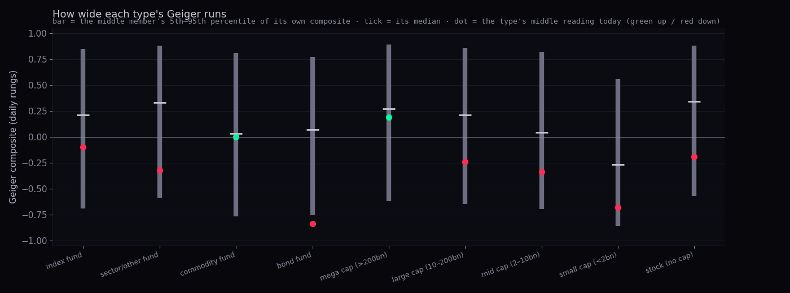
| type (members) | composite 5th · median · 95th | width (5th–95th) · member spread | RSI 5th · 95th · width | today: composite · own pct · trend · momentum |
|---|---|---|---|---|
| index fund (19) | -0.69 · 0.21 · 0.85 | 1.51 1.41 to 1.57 | 33.6 · 70.1 · 36.6 | -0.10 · 34th · +0.18 · -0.32 |
| sector/other fund (39) | -0.59 · 0.33 · 0.88 | 1.46 1.36 to 1.62 | 33.8 · 71.4 · 37.5 | -0.32 · 21st · -0.04 · -0.44 |
| commodity fund (10) | -0.77 · 0.03 · 0.81 | 1.58 1.52 to 1.64 | 31.4 · 71.0 · 41.4 | +0.00 · 53rd · +0.18 · -0.21 |
| bond fund (6) | -0.76 · 0.07 · 0.77 | 1.54 1.50 to 1.57 | 31.6 · 68.1 · 36.0 | -0.84 · 2nd · -0.83 · -0.83 |
| mega cap (>200bn) (63) | -0.62 · 0.27 · 0.89 | 1.50 1.40 to 1.61 | 33.1 · 72.6 · 39.5 | +0.19 · 46th · +0.23 · +0.17 |
| large cap (10–200bn) (223) | -0.65 · 0.21 · 0.86 | 1.51 1.42 to 1.61 | 32.7 · 71.7 · 39.3 | -0.24 · 22nd · -0.10 · -0.41 |
| mid cap (2–10bn) (24) | -0.70 · 0.04 · 0.82 | 1.49 1.32 to 1.62 | 32.0 · 71.6 · 40.3 | -0.34 · 29th · -0.34 · -0.16 |
| small cap (<2bn) (8) | -0.86 · -0.27 · 0.56 | 1.34 1.09 to 1.48 | 30.6 · 69.9 · 39.4 | -0.68 · 15th · -0.67 · -0.65 |
| stock (no cap) (51) | -0.57 · 0.34 · 0.88 | 1.46 1.38 to 1.53 | 33.9 · 70.8 · 37.0 | -0.19 · 26th · +0.09 · -0.41 |
How to read it. The composite's width is the same for every type within a few hundredths: the trend family is a count of fan pairs in order, which reaches ±1 for an index as easily as for a stock. The RSI band is what differs, and only by a few points (36.6 for index funds, 41.4 for commodity funds, about 39.3 for stocks). So the answer to "index RSIs run in a narrower range" is: yes, a little, and the Geiger already halves that difference by mixing RSI with Williams %R inside the momentum family.
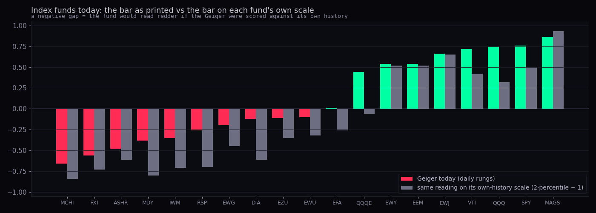
| fund | Geiger today (daily rungs) | own-history percentile | on its own scale (2p−1) | shift | trend · momentum | RSI today | composite 5th · 95th |
|---|---|---|---|---|---|---|---|
| MCHI | -0.66 | 8th | -0.84 | -0.18 | -0.79 · -0.52 | 40.4 | -0.72 · 0.87 |
| FXI | -0.56 | 14th | -0.73 | -0.17 | -0.58 · -0.54 | 39.9 | -0.71 · 0.76 |
| ASHR | -0.48 | 19th | -0.61 | -0.13 | -0.29 · -0.66 | 37.6 | -0.75 · 0.85 |
| MDY | -0.38 | 10th | -0.80 | -0.42 | -0.14 · -0.63 | 37.1 | -0.54 · 0.87 |
| IWM | -0.35 | 14th | -0.71 | -0.36 | -0.04 · -0.66 | 34.9 | -0.60 · 0.86 |
| RSP | -0.26 | 15th | -0.70 | -0.44 | +0.09 · -0.60 | 36.1 | -0.56 · 0.90 |
| EWG | -0.20 | 28th | -0.45 | -0.25 | -0.03 · -0.37 | 42.0 | -0.72 · 0.83 |
| DIA | -0.12 | 20th | -0.61 | -0.49 | +0.09 · -0.33 | 43.1 | -0.53 · 0.91 |
| EZU | -0.11 | 32nd | -0.35 | -0.24 | +0.09 · -0.32 | 44.7 | -0.71 · 0.82 |
| EWU | -0.10 | 34th | -0.32 | -0.22 | +0.18 · -0.38 | 42.8 | -0.69 · 0.82 |
| EFA | +0.01 | 37th | -0.26 | -0.27 | +0.18 · -0.16 | 46.7 | -0.69 · 0.82 |
| QQQE | +0.44 | 47th | -0.06 | -0.50 | +0.55 · +0.33 | 54.8 | -0.49 · 0.91 |
| EWY | +0.54 | 76th | +0.52 | -0.02 | +0.79 · +0.29 | 54.5 | -0.72 · 0.84 |
| EEM | +0.54 | 76th | +0.52 | -0.02 | +0.79 · +0.30 | 54.2 | -0.67 · 0.84 |
| EWJ | +0.66 | 82nd | +0.65 | -0.01 | +0.88 · +0.43 | 54.6 | -0.69 · 0.84 |
| VTI | +0.72 | 71st | +0.42 | -0.30 | +1.00 · +0.45 | 55.1 | -0.54 · 0.91 |
| QQQ | +0.75 | 66th | +0.32 | -0.43 | +0.79 · +0.71 | 64.7 | -0.42 · 0.95 |
| SPY | +0.76 | 75th | +0.50 | -0.26 | +1.00 · +0.52 | 55.9 | -0.54 · 0.91 |
| MAGS | +0.86 | 96th | +0.93 | +0.07 | +1.00 · +0.71 | 66.2 | -0.74 · 0.82 |
How to read it. Two things happen at once. The weak funds (China, mid caps, small caps, equal weight, the Dow) would read redder, because a mildly negative bar is a low reading for a fund that spends most of its life above zero. The strong US funds (SPY, QQQ, VTI) would read less green, because 0.76 is only the 75th percentile of SPY's own composite. Across all 443 names the median shift is -0.22 for large caps and -0.25 for index funds: the own-history scale is redder for almost everything, because the composite's history is skewed upward (its median sits at +0.21 for index funds, not at zero).
Proposal, not a change. Keep the Geiger as it is. Add a second, quiet readout beside the bar: the composite's own-history percentile ("75th of its own history"), and a type ladder (index fund / sector fund / mega cap … / small cap) for the RSI floors, as the statistician-2 page already builds. The bar stays comparable across names; the percentile tells you whether a reading is unusual for that name. Do not rescale the bar by type: the width table above shows the scale is already the same.
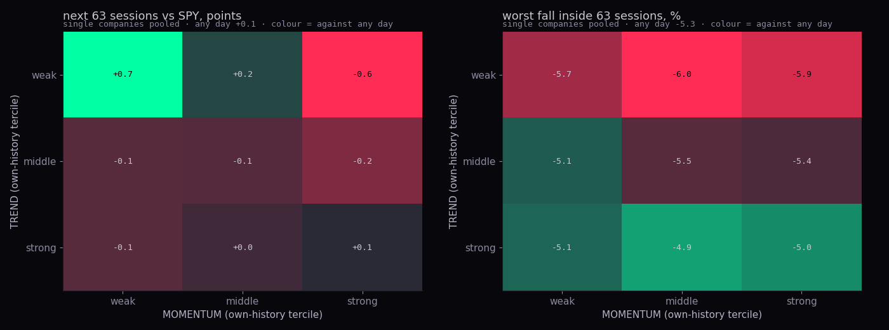
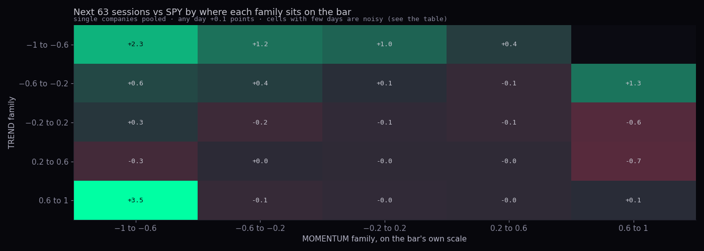
| TREND tercile | MOMENTUM tercile | share of stock-days | next 63 vs SPY, points · 90% range | status (9 cells) | next 63, % · share up | worst fall in 63 · status |
|---|---|---|---|---|---|---|
| weak | weak | 21.2% | +0.73 0.19 to 1.22 | leaning | +4.70 · 62.3% | -5.7 · not shown |
| weak | middle | 8.3% | +0.16 -0.43 to 0.77 | not shown | +3.66 · 59.6% | -6.0 · not shown |
| weak | strong | 1.2% | -0.59 -1.49 to 0.06 | not shown | +2.97 · 57.6% | -5.9 · not shown |
| middle | weak | 9.6% | -0.07 -0.35 to 0.29 | not shown | +3.82 · 60.8% | -5.1 · not shown |
| middle | middle | 13.0% | -0.06 -0.39 to 0.23 | not shown | +3.56 · 59.6% | -5.5 · not shown |
| middle | strong | 8.8% | -0.19 -0.59 to 0.21 | not shown | +3.24 · 58.4% | -5.4 · not shown |
| strong | weak | 1.1% | -0.07 -0.57 to 0.30 | not shown | +3.58 · 60.7% | -5.1 · not shown |
| strong | middle | 11.1% | +0.00 -0.33 to 0.30 | not shown | +3.13 · 59.8% | -4.9 · not shown |
| strong | strong | 25.6% | +0.07 -0.18 to 0.28 | not shown | +3.32 · 59.2% | -5.0 · not shown |
| any day | 100% | +0.07 | +3.77 · 60.0% | -5.3 |
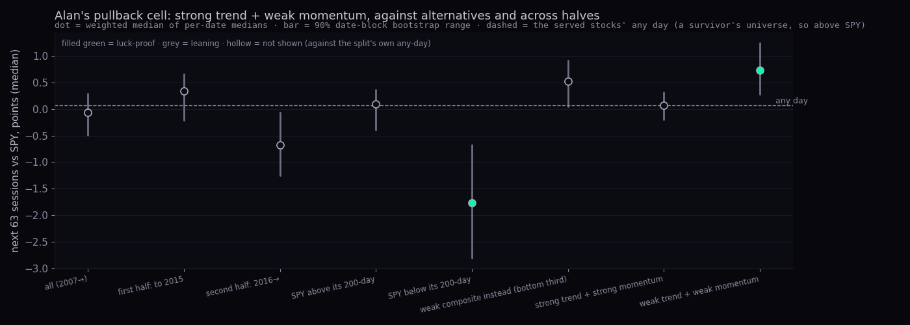
| the cell, and its alternatives | dates | next 63 vs SPY, points · 90% range | the split's own any-day | status (8 tests) | next 63, % · share up | any day |
|---|---|---|---|---|---|---|
| all (2007→) | 3,137 | -0.07 -0.49 to 0.29 | +0.07 | not shown | +3.58 · 60.7% | +3.77 · 60.0% |
| first half: to 2015 | 1,288 | +0.34 -0.21 to 0.66 | +0.43 | not shown | +4.21 · 63.2% | +3.68 · 58.4% |
| second half: 2016→ | 1,849 | -0.68 -1.25 to -0.07 | -0.20 | not shown | +3.00 · 58.3% | +3.83 · 60.9% |
| SPY above its 200-day | 2,668 | +0.09 -0.39 to 0.36 | -0.06 | not shown | +3.59 · 61.0% | +3.53 · 59.4% |
| SPY below its 200-day | 469 | -1.76 -2.80 to -0.67 | +0.65 | luck-proof | +3.28 · 58.4% | +5.99 · 62.3% |
| weak composite instead (bottom third) | 4,523 | +0.52 0.05 to 0.92 | +0.07 | not shown | +4.49 · 61.6% | +3.77 · 60.0% |
| strong trend + strong momentum | 4,485 | +0.07 -0.20 to 0.31 | +0.07 | not shown | +3.32 · 59.2% | +3.77 · 60.0% |
| weak trend + weak momentum | 4,514 | +0.73 0.28 to 1.24 | +0.07 | luck-proof | +4.70 · 62.3% | +3.77 · 60.0% |
How to read it. Strong trend with weak momentum is the corner Alan described, and it is a small corner: the two families move together, so only about one stock-day in a hundred sits there. Pooled, it did not beat the stocks' own any-day (-0.07 against +0.07); it leaned up in the first half of the record and down in the second, and when SPY was below its 200-day it was clearly worse (-1.76 points, luck-proof): a strong-trend name whose momentum breaks in a falling market is a name whose trend is about to break. The edge sits in the opposite corner, weak trend + weak momentum (+0.73, leaning), which is mean reversion in the beaten names, and it is the same thing the composite ladder shows: the lowest rungs of the composite had the best next quarter, the highest the worst. That ladder holds for stocks and, more weakly, for index funds (section 1e). None of this is a buy rule: a 0.73-point median edge over a quarter is small next to the -5.7% worst fall those same names carried inside the quarter. On the fifths grid (the bar's own units) the brightest corner, trend 0.6 to 1 with momentum −1 to −0.6, is 13 dates: a list, not a rate; the family maths almost never let a fully ordered fan sit with a floored momentum.
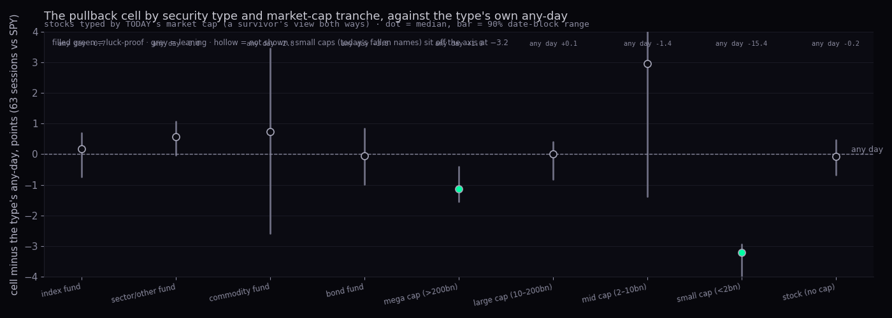
| type | names | cell share of days | cell: next 63 vs SPY · 90% range | the type's any-day vs SPY | status (9 types) | cell: next 63 % | type's any-day % | composite ladder: rank link (deciles → next 63) |
|---|---|---|---|---|---|---|---|---|
| index fund | 19 | 1.4% | -0.52 -1.44 to 0.00 | -0.70 | not shown | +3.99 | +2.93 | -0.89 |
| sector/other fund | 39 | 1.1% | +0.57 -0.03 to 1.07 | -0.00 | not shown | +3.59 | +3.68 | -0.96 |
| commodity fund | 10 | 1.5% | -2.10 -5.41 to 0.62 | -2.83 | not shown | +2.95 | +0.66 | -0.37 |
| bond fund | 6 | 1.3% | -3.83 -4.76 to -2.93 | -3.77 | not shown | -0.06 | +0.09 | 0.41 |
| mega cap (>200bn) | 63 | 1.1% | -0.13 -0.55 to 0.60 | +1.01 | luck-proof | +3.53 | +4.78 | -1.00 |
| large cap (10–200bn) | 223 | 1.1% | +0.08 -0.76 to 0.48 | +0.07 | not shown | +3.60 | +3.70 | -0.99 |
| mid cap (2–10bn) | 24 | 1.4% | +1.54 -2.79 to 5.04 | -1.41 | not shown | +3.34 | +2.46 | 0.36 |
| small cap (<2bn) | 8 | 1.6% | -18.64 -20.96 to -18.37 | -15.43 | luck-proof | -16.23 | -11.20 | -0.60 |
| stock (no cap) | 51 | 1.1% | -0.31 -0.91 to 0.23 | -0.24 | not shown | +3.34 | +3.47 | -0.96 |
How to read it. The tranche table is where today's-cap typing bites. Mega caps' any-day is +1.01 points over SPY (they are the names that became mega caps), small caps' is -15.43 (they are the names that shrank). Inside each type the pullback cell tracks the type's own any-day: no tranche turns the cell into an edge. The composite ladder's slope is negative (low rungs, better quarter) for every stock tranche with enough names and for index funds; it is flat or positive only for the bond funds and the few mid caps. Tranches by point-in-time cap are a follow-up (F1).
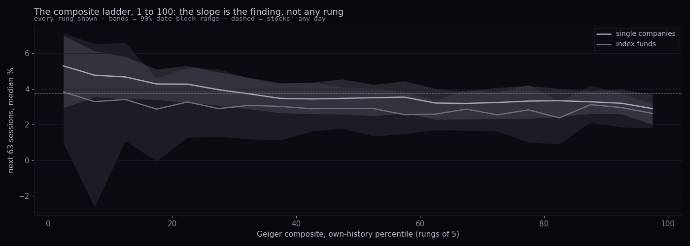
Rungs of 5 over the composite's own percentile: for single companies the next-63 median runs from 5.29% at the bottom rung to 2.90% at the top (any day 3.77%); for index funds from 3.83% to 2.63%. The slope is the finding; no single rung is, and the bands overlap along most of the ladder.
What we measured. Seven fear gauges on SPY's daily bars from 2006-11-07 (the first day every gauge exists; Cboe put/call starts then): the VIX level, the VIX against its own 50-day, the VIX cloud (above both its 50- and 200-day averages, or below both), the 5-session average of the total put/call, SPY's RSI, the share of served names above their 50-day, and a fear & greed proxy built like the public one from seven parts (momentum vs the 125-day, 52-week highs minus lows, 20-day advances, put/call, VIX vs its 50-day, stocks vs bonds over 20 days, junk vs investment-grade bonds over 20 days), each part its own expanding percentile, averaged. Every gauge is read as its own-history percentile with no lookahead. Outcomes: SPY's next 5, 21 and 63 sessions, the further fall inside 21, and whether a confirmed swing low (10-bar pivot, 3% or deeper) sat within 5 sessions before to 15 after. Every subset of one, two or three gauges "on" at once was tested at three lines (top 5, 10 and 20% of own history), fear side and greed side: 63 combinations per line, false-discovery corrected together. Ranges come from resampling runs of days; the honest count is visits (separate episodes), printed beside every n.
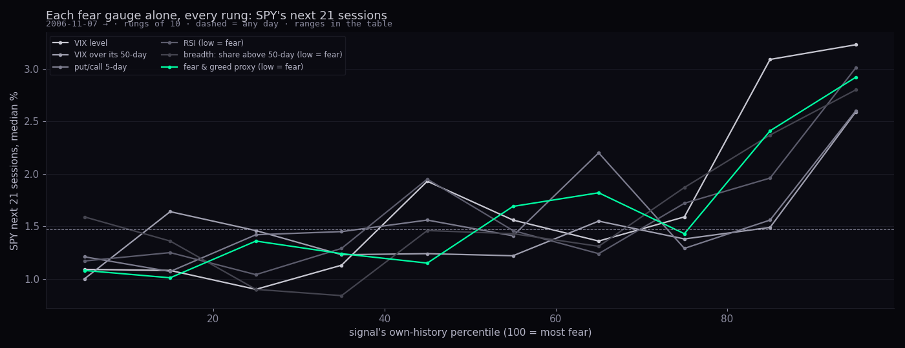
| gauge (top 10% of own history = most fear) | days · visits | SPY next 21, median · 90% range | status | further fall in 21 | a swing low nearby | today (own pct) |
|---|---|---|---|---|---|---|
| VIX level | 497 · 69 | +3.23 0.93 to 4.87 | not shown | -3.2 | 59.0% (any day 30.9%) | 31 |
| VIX over its 50-day | 688 · 176 | +2.59 1.57 to 3.14 | leaning | -2.7 | 72.1% (any day 30.9%) | 37 |
| VIX cloud | 1363 · 221 | +2.06 1.29 to 2.70 | not shown | -2.6 | 61.6% (any day 30.9%) | 0 |
| put/call 5-day | 331 · 65 | +2.60 1.78 to 2.97 | luck-proof | -2.4 | 79.2% (any day 30.9%) | 8 |
| RSI | 493 · 164 | +3.01 2.05 to 3.68 | luck-proof | -2.2 | 84.0% (any day 30.9%) | 51 |
| breadth | 521 · 97 | +2.80 1.75 to 3.70 | luck-proof | -2.8 | 82.0% (any day 30.9%) | 83 |
| fear & greed proxy | 311 · 89 | +2.92 2.04 to 3.53 | luck-proof | -2.5 | 83.3% (any day 30.9%) | 53 |
How to read it. Every gauge's ladder rises toward the fear end: more fear, better next month, and a higher chance a swing low is near. The gauges that are luck-proof on their own are the ones read against SPY's own tape (RSI, breadth, the proxy) and put/call; the VIX level is not, because its extreme days are the 2008, 2020 and 2022 crashes, a handful of visits with outcomes from +0.93 to +4.87% inside a month. Today every gauge sits in the calm half (VIX at its 31st percentile, put/call at its 8th, RSI middle); breadth is the exception: the share of names above their 50-day is 34.6%, the 83rd percentile of fear.
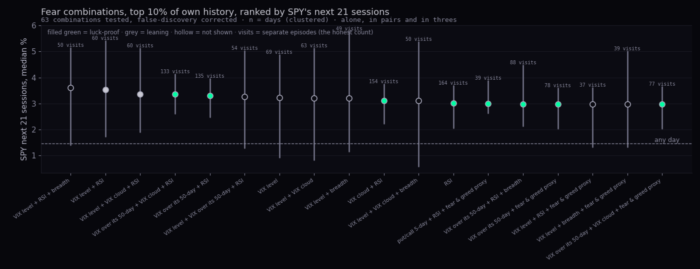
| signals on at once | days · visits · years | SPY next 21, median · 90% range | status | next 63 | further fall in 21 | a swing low within −5…+15 sessions | gain over its best single (21) |
|---|---|---|---|---|---|---|---|
| VIX level + RSI + breadth | 149 · 50 · 11 | +3.60 1.41 to 5.13 | not shown | +5.24 leaning | -2.6 | 88.6% luck-proof | +0.37 |
| VIX level + RSI | 168 · 60 · 13 | +3.54 1.74 to 5.40 | leaning | +5.15 not shown | -2.6 | 85.1% luck-proof | +0.31 |
| VIX level + VIX cloud + RSI | 163 · 60 · 13 | +3.35 1.91 to 5.11 | leaning | +5.11 not shown | -2.6 | 84.7% luck-proof | +0.12 |
| VIX over its 50-day + VIX cloud + RSI | 338 · 133 · 19 | +3.35 2.62 to 4.12 | luck-proof | +5.51 not shown | -2.0 | 82.5% luck-proof | +0.34 |
| VIX over its 50-day + RSI | 349 · 135 · 19 | +3.31 2.48 to 3.95 | luck-proof | +5.59 not shown | -2.0 | 83.1% luck-proof | +0.30 |
| VIX level + VIX over its 50-day + RSI | 134 · 54 · 12 | +3.26 1.30 to 5.03 | not shown | +3.90 not shown | -2.5 | 81.3% luck-proof | +0.03 |
| VIX level | 497 · 69 · 13 | +3.23 0.93 to 4.87 | not shown | +6.98 not shown | -3.2 | 59.0% luck-proof | — |
| VIX level + VIX cloud | 318 · 63 · 13 | +3.20 0.84 to 5.12 | not shown | +5.00 not shown | -3.4 | 73.0% luck-proof | -0.03 |
| VIX level + breadth | 242 · 49 · 11 | +3.20 1.16 to 5.76 | not shown | +4.98 not shown | -3.4 | 78.5% luck-proof | -0.03 |
| VIX cloud + RSI | 439 · 154 · 20 | +3.11 2.23 to 3.74 | luck-proof | +5.65 leaning | -2.2 | 82.5% luck-proof | +0.10 |
| VIX level + VIX cloud + breadth | 233 · 50 · 11 | +3.11 0.59 to 5.36 | not shown | +4.96 not shown | -3.3 | 78.5% luck-proof | -0.12 |
| RSI | 493 · 164 · 20 | +3.01 2.05 to 3.68 | luck-proof | +5.80 leaning | -2.2 | 84.0% luck-proof | — |
| put/call 5-day + RSI + fear & greed proxy | 120 · 39 · 13 | +2.99 2.64 to 3.87 | luck-proof | +6.68 luck-proof | -1.8 | 91.7% luck-proof | -0.02 |
| VIX over its 50-day + RSI + breadth | 231 · 88 · 17 | +2.98 2.14 to 4.47 | luck-proof | +5.14 not shown | -2.3 | 89.2% luck-proof | -0.03 |
| signals on at once | days · visits · years | SPY next 21, median · 90% range | status | next 63 | further fall in 21 | a swing low within −5…+15 sessions | gain over its best single (21) |
|---|---|---|---|---|---|---|---|
| VIX level + RSI | 53 · 31 · 10 | +4.67 3.35 to 7.27 | luck-proof | +10.37 luck-proof | -2.8 | 86.8% luck-proof | +1.51 |
| VIX level + VIX cloud + RSI | 53 · 31 · 10 | +4.67 3.28 to 7.27 | luck-proof | +10.37 luck-proof | -2.8 | 86.8% luck-proof | +1.51 |
| VIX level + breadth + fear & greed proxy | 53 · 19 · 7 | +4.67 2.16 to 10.59 | a list | +8.40 a list | -4.4 | 77.4% a list | +1.13 |
| VIX over its 50-day + breadth + fear & greed proxy | 88 · 35 · 10 | +4.17 3.06 to 6.22 | luck-proof | +7.41 leaning | -1.9 | 85.2% luck-proof | +0.63 |
| VIX level + RSI + breadth | 48 · 27 · 9 | +4.13 3.26 to 9.28 | luck-proof | +10.89 luck-proof | -3.2 | 87.5% luck-proof | +0.97 |
| put/call 5-day + breadth + fear & greed proxy | 43 · 18 · 7 | +4.06 3.11 to 5.37 | a list | +9.86 a list | -2.6 | 83.7% a list | +0.52 |
| VIX over its 50-day + fear & greed proxy | 106 · 40 · 12 | +3.81 3.00 to 5.36 | luck-proof | +6.73 not shown | -2.0 | 84.9% luck-proof | +0.27 |
| VIX over its 50-day + VIX cloud + fear & greed proxy | 106 · 40 · 12 | +3.81 2.85 to 5.43 | luck-proof | +6.73 not shown | -2.0 | 84.9% luck-proof | +0.27 |
| VIX over its 50-day + put/call 5-day + fear & greed proxy | 42 · 17 · 6 | +3.76 2.99 to 5.37 | a list | +9.50 a list | -2.6 | 83.3% a list | +0.22 |
| breadth + fear & greed proxy | 107 · 42 · 12 | +3.67 3.00 to 5.37 | luck-proof | +7.36 leaning | -2.0 | 86.9% luck-proof | +0.13 |
| signals on at once | days · visits · years | SPY next 21, median · 90% range | status | next 63 | further fall in 21 | a swing low within −5…+15 sessions | gain over its best single (21) |
|---|---|---|---|---|---|---|---|
| VIX level + RSI + breadth | 402 · 102 · 18 | +3.33 2.14 to 4.68 | luck-proof | +4.91 not shown | -2.7 | 81.6% luck-proof | +0.17 |
| VIX level + breadth + fear & greed proxy | 406 · 92 · 18 | +3.30 1.91 to 4.62 | luck-proof | +4.10 not shown | -2.8 | 76.4% luck-proof | +0.14 |
| VIX level + fear & greed proxy | 432 · 95 · 18 | +3.29 1.91 to 4.46 | luck-proof | +3.90 not shown | -2.8 | 75.2% luck-proof | +0.13 |
| VIX level + RSI | 441 · 110 · 18 | +3.28 2.03 to 4.33 | luck-proof | +4.92 not shown | -2.8 | 80.5% luck-proof | +0.12 |
| VIX level + VIX over its 50-day + fear & greed proxy | 364 · 85 · 18 | +3.24 1.73 to 4.44 | luck-proof | +4.36 not shown | -2.9 | 77.7% luck-proof | +0.08 |
| VIX level + VIX over its 50-day + RSI | 347 · 101 · 18 | +3.23 1.68 to 4.13 | luck-proof | +4.86 not shown | -2.8 | 81.6% luck-proof | +0.07 |
| VIX level | 935 · 103 · 18 | +3.16 1.92 to 3.95 | luck-proof | +6.56 not shown | -2.9 | 61.2% luck-proof | — |
| VIX level + breadth | 527 · 94 · 18 | +3.16 1.73 to 4.33 | leaning | +4.10 not shown | -3.0 | 74.8% luck-proof | +0.00 |
| VIX level + RSI + fear & greed proxy | 369 · 97 · 18 | +3.05 1.78 to 4.13 | luck-proof | +4.31 not shown | -2.8 | 79.1% luck-proof | -0.11 |
| VIX level + VIX over its 50-day | 454 · 92 · 18 | +3.01 1.59 to 4.10 | luck-proof | +4.36 not shown | -3.1 | 77.1% luck-proof | -0.15 |
How to read it. "Gain over its best single" is the honest test of confluence: a pair earns its place only if it beats the better of its two parts. At the 10% line the best pairs add 0.1 to 0.4 points to their best single; that is size, and it comes with fewer days. Their ranges do not narrow: confluence picks the same fearful weeks with a second name. The one combination that stands apart is at the 5% line, VIX level + RSI, +4.67% over 21 sessions and +10.37% over 63, both luck-proof, from 31 visits in 10 years: a real crash with the tape oversold. The VIX cloud adds nothing anywhere: "above both averages" is on 1363 days of the record and every pair that includes it matches the same pair without it.
| signals on at once | days · visits · years | SPY next 21, median · 90% range | status | next 63 | further fall in 21 | a swing low within −5…+15 sessions | gain over its best single (21) |
|---|---|---|---|---|---|---|---|
| VIX cloud + breadth | 318 · 66 · 15 | +1.77 1.19 to 2.23 | not shown | +4.88 not shown | -1.1 | 34.6% not shown | +0.18 |
| VIX cloud + put/call 5-day + breadth | 81 · 34 · 9 | +1.72 1.08 to 2.23 | not shown | +5.23 luck-proof | -2.9 | 40.7% not shown | +0.13 |
| put/call 5-day + breadth | 92 · 36 · 9 | +1.68 1.12 to 2.20 | not shown | +5.62 luck-proof | -3.0 | 46.7% not shown | +0.09 |
| breadth | 363 · 76 · 16 | +1.59 1.12 to 2.02 | not shown | +5.04 not shown | -1.4 | 40.2% not shown | — |
| VIX over its 50-day + VIX cloud + breadth | 168 · 44 · 13 | +1.54 0.73 to 1.97 | not shown | +3.47 not shown | -1.0 | 30.4% not shown | -0.05 |
| VIX over its 50-day + VIX cloud + fear & greed proxy | 157 · 75 · 17 | +1.49 0.54 to 2.14 | not shown | +4.68 not shown | -1.0 | 35.0% not shown | +0.18 |
| VIX over its 50-day + put/call 5-day + fear & greed proxy | 87 · 35 · 11 | +1.49 0.48 to 2.14 | not shown | +5.48 luck-proof | -1.4 | 43.7% not shown | +0.28 |
| VIX cloud + put/call 5-day + fear & greed proxy | 176 · 62 · 13 | +1.47 0.73 to 2.16 | not shown | +4.91 luck-proof | -2.2 | 42.6% not shown | +0.16 |
Greed does not time tops on this record: the best greed combination over 21 sessions is still an ordinary month, and none clears the check (a few clear it over 63 sessions, in the wrong direction: greed was followed by a better quarter, which is the trend). The VIX below both its averages is on 2490 of the days: it is the normal state of a rising market, not a warning.
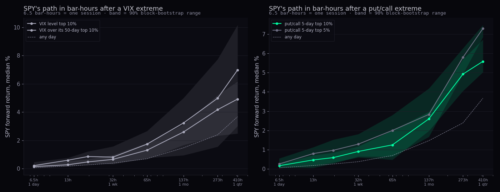
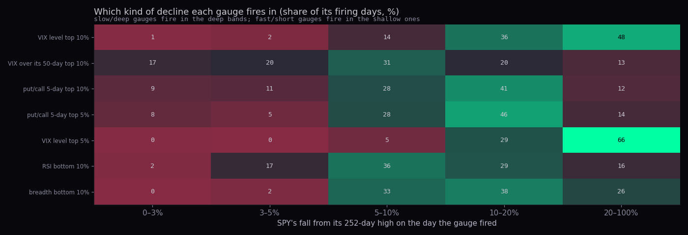
| gauge at its extreme | days · visits | SPY's fall from its high on those days (median · lower quartile) | share of firings more than 10% under the high | further fall next 21 · 63 | a run lasts (sessions) | swing low nearby | next 21 (median · p vs any day) |
|---|---|---|---|---|---|---|---|
| VIX level top 10% | 497 · 69 | -18.0% · -38.3% | 83.3% | -3.2 · -4.7 | 2.0 | 59.0% | +3.23 · 0.26 |
| VIX over its 50-day top 10% | 688 · 176 | -6.7% · -12.3% | 32.3% | -2.7 · -4.1 | 2.0 | 72.1% | +2.59 · 0.05 |
| put/call 5-day top 10% | 331 · 65 | -10.2% · -15.8% | 52.3% | -2.4 · -3.7 | 4.0 | 79.2% | +2.60 · 0.03 |
| put/call 5-day top 5% | 120 · 37 | -11.5% · -17.4% | 60.0% | -2.2 · -3.4 | 3.0 | 81.7% | +2.83 · 0.07 |
| VIX level top 5% | 273 · 36 | -35.4% · -41.5% | 94.9% | -4.4 · -6.4 | 1.5 | 57.9% | +3.16 · 0.50 |
| RSI bottom 10% | 493 · 164 | -9.1% · -16.4% | 45.4% | -2.2 · -3.9 | 2.0 | 84.0% | +3.01 · 0.02 |
| breadth bottom 10% | 521 · 97 | -13.4% · -20.3% | 64.5% | -2.8 · -4.9 | 2.0 | 82.0% | +2.80 · 0.05 |
| gauge | 6.5 h (1 session) | 13 h | 20 h | 32 h (1 week) | 65 h | 137 h (1 month) | 273 h | 410 h (1 quarter) |
|---|---|---|---|---|---|---|---|---|
| VIX level top 10% | +0.21 | +0.59 | +0.85 | +0.81 | +1.73 | +3.23 | +4.98 | +6.98 |
| VIX over its 50-day top 10% | +0.14 | +0.27 | +0.47 | +0.65 | +1.30 | +2.59 | +4.17 | +4.92 |
| put/call 5-day top 10% | +0.17 | +0.47 | +0.59 | +0.91 | +1.25 | +2.60 | +4.92 | +5.58 |
| put/call 5-day top 5% | +0.26 | +0.80 | +0.97 | +1.29 | +2.00 | +2.83 | +5.79 | +7.28 |
| VIX level top 5% | +0.55 | +0.76 | +1.00 | +0.90 | +1.71 | +3.16 | +4.98 | +7.20 |
| RSI bottom 10% | +0.17 | +0.42 | +0.64 | +0.97 | +1.58 | +3.01 | +4.92 | +5.80 |
| breadth bottom 10% | +0.19 | +0.59 | +0.82 | +1.09 | +1.60 | +2.80 | +4.88 | +4.91 |
| any day | +0.06 | +0.18 | +0.26 | +0.38 | +0.70 | +1.47 | +2.39 | +3.67 |
How to read it. Green in the bar-hours table means the median clears any day at the 10% line. The put/call extreme's edge is present from about 20 bar-hours (3 sessions) and stays through the quarter; the VIX level's is clear only at 13–20 bar-hours (the bounce after a capitulation day) and then the range opens up. The depth mix says why: VIX extremes are almost all deep declines (83.3% more than 10% under the high; the top-5% VIX is 94.9%), put/call extremes are mostly 5–20% declines, and the VIX against its own 50-day fires in the shallow ones (32.3% deep). So the framing is right, with one amendment: the fast gauge is put/call and VIX-over-its-50-day, and the deep gauge is the VIX level, whose extremes come with a further fall of -3.2% inside the next month and a wait that the bottoms study measured in months.
| gauge (top 10%) | lows of 3–5% (22) | lows of 5–10% (34) | lows of 10–20% (15) | lows of 20–100% (4) |
|---|---|---|---|---|
| VIX level top 10% | fired in 18.2% · lead 2 sessions | fired in 38.2% · lead 9 sessions | fired in 80.0% · lead 4 sessions | fired in 100.0% · lead 22 sessions |
| VIX over its 50-day top 10% | fired in 68.2% · lead 4 sessions | fired in 85.3% · lead 10 sessions | fired in 93.3% · lead 14 sessions | fired in 75.0% · lead 21 sessions |
| put/call 5-day top 10% | fired in 18.2% · lead 1 sessions | fired in 47.1% · lead 10 sessions | fired in 66.7% · lead 5 sessions | fired in 50.0% · lead 18 sessions |
| RSI bottom 10% | fired in 59.1% · lead 2 sessions | fired in 97.1% · lead 5 sessions | fired in 100.0% · lead 13 sessions | fired in 100.0% · lead 20 sessions |
| breadth bottom 10% | fired in 22.7% · lead 2 sessions | fired in 76.5% · lead 4 sessions | fired in 93.3% · lead 12 sessions | fired in 100.0% · lead 18 sessions |
Lead = sessions from the gauge's first firing in the decline to the swing low. The put/call and the VIX level fired in fewer than half of the 5–10% declines; RSI's bottom decile fired in 97.1% of them, about 5 sessions early. For the tranche buyer that is the practical reading: RSI percentile is the trigger, put/call is the confirmation in the middle-sized declines, the VIX level says only that a decline is deep.
What we measured. For every served single company: the state is the close below its 200-day, the 200-day lower than 20 sessions before, and the 50-day below the 200-day. An entry is the first day in the state (a re-entry inside 21 sessions is the same episode). At entry, thirteen characteristics known that day; afterwards, the worst close within 126 and 252 sessions, the next-year return, and whether the 200-day was reclaimed. The bad decile is the worst tenth of the 252-session fall. Each characteristic is judged by the chance a bad entry has the higher value (0.5 = no difference), with a 90% range from resampling entries and a false-discovery check over the thirteen. Then the standard's walk-forward: flags chosen on entries before 2016, counted on entries from 2016. The histories are today's served names, cut at data faults, so the sample is survivors plus this year's admissions: the bad-decile line is if anything too kind.
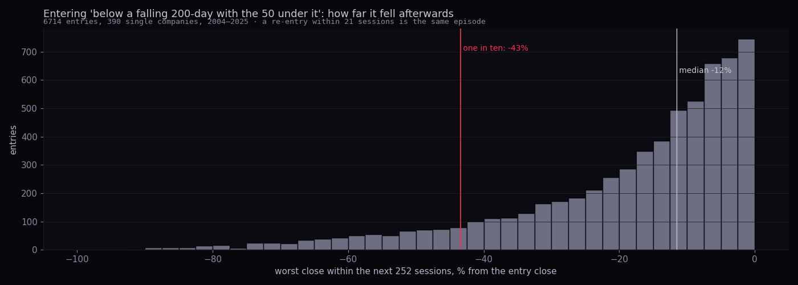
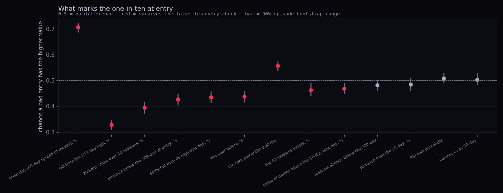
| characteristic at entry | bad decile (median) | the rest (median) | chance a bad entry has the higher value · 90% range | status (13 tests) |
|---|---|---|---|---|
| distance below the 200-day at entry, % | -5.34 | -3.93 | 0.43 0.41 to 0.45 | luck-proof |
| fall from the 252-day high, % | -25.58 | -17.97 | 0.33 0.31 to 0.34 | luck-proof |
| the 63 sessions before, % | -5.38 | -4.12 | 0.46 0.44 to 0.49 | luck-proof |
| the year before, % | -7.75 | -3.93 | 0.44 0.42 to 0.46 | luck-proof |
| RSI own percentile | 33.74 | 32.01 | 0.51 0.49 to 0.53 | not shown |
| sessions already below the 200-day | 9.00 | 12.00 | 0.48 0.46 to 0.50 | not shown |
| usual day (60-day spread of moves), % | 2.63 | 1.76 | 0.71 0.69 to 0.72 | luck-proof |
| volume vs its 50-day | 0.98 | 0.97 | 0.50 0.48 to 0.53 | not shown |
| 200-day slope over 20 sessions, % | -0.70 | -0.32 | 0.40 0.37 to 0.41 | luck-proof |
| distance from the 50-day, % | -1.52 | -1.60 | 0.48 0.46 to 0.51 | not shown |
| SPY's fall from its high that day, % | -8.45 | -4.91 | 0.43 0.41 to 0.46 | luck-proof |
| VIX own percentile that day | 65.04 | 56.44 | 0.56 0.54 to 0.57 | luck-proof |
| share of names above the 50-day that day, % | 52.17 | 55.88 | 0.47 0.45 to 0.49 | luck-proof |
How to read it. Far from 0.5 is a mark. The names that went on to fall hardest were already the wild ones: a usual day of 2.6% against 1.8% (0.71 is a strong mark for a single number), already -26% off their high, with a 200-day falling twice as fast, and they entered the state while the market itself was -8.4% off its high with the VIX at its 65th percentile. The oversold measures (RSI percentile, distance from the 50-day, volume) did not separate them, and neither did the time already spent below the 200-day. In words: the one-in-ten is the volatile name in a long fall inside a falling market, not the quiet name that just slipped under its average.
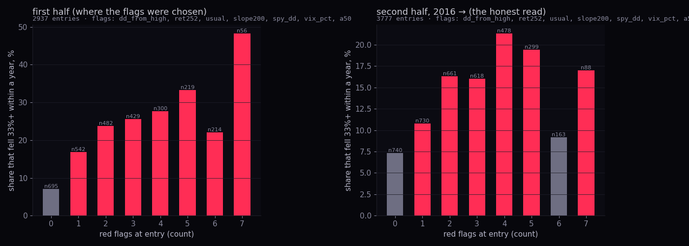
| flag (chosen on 2004–2015 entries) | fires when | chance measure on the first half |
|---|---|---|
| fall from the 252-day high, % | at or below -23.17 | 0.36 |
| the year before, % | at or below -8.78 | 0.42 |
| usual day (60-day spread of moves), % | at or above 2.23 | 0.69 |
| 200-day slope over 20 sessions, % | at or below -0.72 | 0.42 |
| SPY's fall from its high that day, % | at or below -10.29 | 0.33 |
| VIX own percentile that day | at or above 79.19 | 0.62 |
| share of names above the 50-day that day, % | at or below 35.79 | 0.43 |
| flags at entry | first half (where the flags were chosen) (n 2,937) | second half, 2016 → (the honest read) (n 3,777) |
|---|---|---|
| 0 | 7.1% fell 33%+ · worst fall -7.5% -8.0 to -6.8 · next year +9.4% · n 695 | 7.3% fell 33%+ · worst fall -9.4% -10.5 to -8.5 · next year +9.6% · n 740 |
| 1 | 16.8% fell 33%+ · worst fall -10.5% -11.6 to -9.2 · next year +8.3% · n 542 | 10.8% fell 33%+ · worst fall -12.3% -13.2 to -11.3 · next year +9.9% · n 730 |
| 2 | 23.7% fell 33%+ · worst fall -13.1% -15.4 to -11.8 · next year +6.1% · n 482 | 16.3% fell 33%+ · worst fall -12.7% -13.8 to -12.0 · next year +13.3% · n 661 |
| 3 | 25.6% fell 33%+ · worst fall -14.4% -17.9 to -11.6 · next year +10.3% · n 429 | 16.0% fell 33%+ · worst fall -11.1% -12.1 to -9.9 · next year +16.1% · n 618 |
| 4 | 27.7% fell 33%+ · worst fall -17.7% -21.8 to -15.0 · next year +10.3% · n 300 | 21.3% fell 33%+ · worst fall -12.5% -13.9 to -10.9 · next year +24.3% · n 478 |
| 5 | 33.3% fell 33%+ · worst fall -19.1% -21.7 to -15.0 · next year +7.5% · n 219 | 19.4% fell 33%+ · worst fall -13.2% -15.4 to -11.6 · next year +28.4% · n 299 |
| 6 | 22.0% fell 33%+ · worst fall -11.9% -14.2 to -9.7 · next year +22.5% · n 214 | 9.2% fell 33%+ · worst fall -8.2% -10.3 to -6.9 · next year +49.4% · n 163 |
| 7 | 48.2% fell 33%+ · worst fall -32.4% -41.4 to -28.9 · next year +12.7% · n 56 | 17.0% fell 33%+ · worst fall -9.3% -13.2 to -6.8 · next year +83.4% · n 88 |
How to read it. On the half where nothing was chosen, the share that fell 33%+ rises from 7.3% with no flag to about 21.3% with four or five: the flags carry. The dip at six flags is March 2020, when the three market flags (SPY's fall, the VIX, breadth) fired for everything at once and the whole market recovered; the name's own flags (its usual day, its fall from the high, its prior year, its 200-day slope) are the ones to weight. A rule for the scout tier: an entry into the state with three or more of the name's own flags is the avoid list; with none, the state alone is an ordinary drawdown with a 7.3% tail.
| group | entries | share in the bad decile · 90% range | fell 33%+ within a year | worst fall (median) | next year (median) |
|---|---|---|---|---|---|
| large cap (10–200bn) | 4163 | 9.5% 8.6 to 10.2 | 16.6% | -12.0 | +11.5 |
| mega cap (>200bn) | 1172 | 8.5% 7.3 to 9.9 | 14.2% | -10.2 | +16.3 |
| mid cap (2–10bn) | 326 | 24.8% 21.2 to 28.8 | 37.4% | -25.9 | +18.2 |
| small cap (<2bn) | 70 | 45.7% 37.1 to 55.7 | 64.3% | -40.4 | -7.3 |
| stock (no cap) | 983 | 6.6% 5.3 to 7.8 | 10.4% | -8.5 | +11.7 |
| SPY above its 200-day | 4023 | 7.8% 7.1 to 8.5 | 14.5% | -11.2 | +11.9 |
| SPY below its 200-day | 2691 | 13.3% 12.3 to 14.5 | 20.1% | -12.0 | +13.1 |
| Basic Materials | 656 | 13.6% 11.6 to 15.5 | 21.5% | -16.3 | +10.4 |
| Communication Services | 279 | 14.3% 11.5 to 17.6 | 19.7% | -9.7 | +12.1 |
| Consumer Cyclical | 473 | 13.1% 10.8 to 15.6 | 22.6% | -15.1 | +13.1 |
| Consumer Defensive | 349 | 0.9% 0.0 to 1.7 | 6.0% | -8.2 | +7.6 |
| Energy | 352 | 13.4% 10.5 to 15.9 | 21.0% | -14.3 | +11.6 |
| Financial Services | 524 | 12.2% 9.9 to 14.7 | 19.3% | -12.7 | +13.7 |
| Healthcare | 453 | 4.0% 2.6 to 5.7 | 9.7% | -10.1 | +10.3 |
| Industrials | 768 | 10.8% 9.0 to 12.8 | 17.7% | -11.8 | +16.6 |
| Real Estate | 308 | 6.8% 4.5 to 9.1 | 12.3% | -11.4 | +11.5 |
| Technology | 1153 | 15.1% 13.5 to 16.8 | 24.2% | -14.9 | +19.3 |
| Utilities | 416 | 1.4% 0.5 to 2.4 | 6.2% | -6.3 | +7.9 |
Today's-cap tranches read the way the survivor problem predicts: the names that are small today are the ones that kept falling (64.3% fell 33%+), the mega caps are the ones that did not. The market state is the honest split: entries while SPY was below its own 200-day fell 33%+ in 20.1% of cases against 14.5% when SPY was above. Sectors: staples and utilities almost never (6.0%, 6.2%), technology most (24.2%).
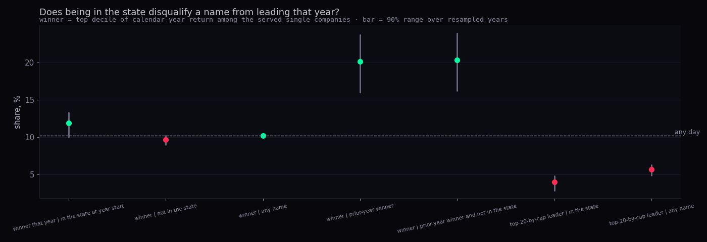
| question | share · 90% range over resampled years | n |
|---|---|---|
| top-decile winner that year, given in the state on 1 January | 11.9% 10.0 to 13.3 | 1363 |
| winner, given not in the state | 9.7% 9.0 to 10.2 | 5007 |
| winner, any name | 10.2% | 6370 |
| winner, given a top-decile winner the year before | 20.1% 16.0 to 23.7 | 606 |
| winner, given prior-year winner and not in the state | 20.3% 16.2 to 23.9 | 595 |
| in the state on 1 January, given a winner that year | 25.0% 15.0 to 34.7 | 648 |
| in the state on 1 January, any name | 21.4% 15.0 to 27.9 | 6370 |
| top-20-by-cap leader, given in the state | 4.0% 2.9 to 4.8 | 1363 |
| top-20-by-cap leader, any name | 5.7% 4.9 to 6.3 | 6370 |
| calendar-year return, median · 90% range over years | in the state on 1 Jan | not in the state | prior-year winner | prior-year winner, not in the state | top-20-by-cap leader | all names |
|---|---|---|---|---|---|---|
| +15.9% 5.6 to 21.5 · n 1363 | +10.6% 5.6 to 14.7 · n 5007 | +15.2% 6.7 to 22.1 · n 606 | +15.3% 6.4 to 23.5 · n 595 | +9.0% 2.8 to 13.1 · n 362 | +11.6% 6.8 to 15.8 · n 6370 |
How to read it. Two facts sit side by side. Being in the state on 1 January did not lower a name's chance of being a top-decile winner that year (11.9% against 10.2%; the range clears the base slightly upward, the reversal names), and its median year was not worse. But the year-before winners became winners again at twice the base rate (20.1%, range 16.0% to 23.7%), and the state hardly changes that (20.3% when not in it). The cap leaders (each year's top 20) were in the state less often than other names (4.0% against 5.7%). So "bet on winners, not reversals of losers" is right about where the repeatable edge is (persistence), and the state's job is the tail: a name in it carries the 16.7% chance of a further third off, which a winner outside it does not.
99 served single companies are in the state at the 25 Sep close. Those with five or more of the seven flags: ACHR (-11% under its 200-day, -59% off its high), ADBE (-10% under its 200-day, -35% off its high), APP (-33% under its 200-day, -58% off its high), AVAV (-25% under its 200-day, -63% off its high), BABA (-17% under its 200-day, -42% off its high), BIDU (-28% under its 200-day, -46% off its high), BSX (-30% under its 200-day, -58% off its high), CEG (-9% under its 200-day, -35% off its high), CHTR (-36% under its 200-day, -60% off its high), DKNG (-16% under its 200-day, -49% off its high), DPZ (-18% under its 200-day, -33% off its high), EH (-52% under its 200-day, -77% off its high), EOSE (-59% under its 200-day, -84% off its high), EVTL (-75% under its 200-day, -90% off its high), FSLR (-22% under its 200-day, -44% off its high), IBM (-12% under its 200-day, -32% off its high), INTU (-32% under its 200-day, -60% off its high), JOBY (-36% under its 200-day, -68% off its high), KKR (-7% under its 200-day, -32% off its high), KTOS (-35% under its 200-day, -65% off its high), LAC (-36% under its 200-day, -73% off its high), LCID (-48% under its 200-day, -84% off its high), LEU (-28% under its 200-day, -66% off its high), LI (-26% under its 200-day, -56% off its high), MP (-14% under its 200-day, -50% off its high), NFLX (-16% under its 200-day, -43% off its high), OKLO (-38% under its 200-day, -78% off its high), ORCL (-17% under its 200-day, -56% off its high), PCG (-26% under its 200-day, -35% off its high), QBTS (-17% under its 200-day, -61% off its high), QS (-35% under its 200-day, -73% off its high), QUBT (-4% under its 200-day, -64% off its high), RBLX (-18% under its 200-day, -67% off its high), RGTI (-10% under its 200-day, -70% off its high), SERV (-46% under its 200-day, -75% off its high), SMR (-31% under its 200-day, -84% off its high), SOFI (-14% under its 200-day, -48% off its high), SYK (-18% under its 200-day, -30% off its high), SYM (-15% under its 200-day, -50% off its high), TMUS (-14% under its 200-day, -31% off its high), TSLA (-6% under its 200-day, -24% off its high), UBER (-7% under its 200-day, -30% off its high), UUUU (-34% under its 200-day, -59% off its high), VST (-11% under its 200-day, -34% off its high).
| name | type | under the 200-day | off its 52-week high | sessions below | flags of 7 |
|---|---|---|---|---|---|
| ACHR | mid cap (2–10bn) | -10.8% | -58.9% | 30 | 5 |
| ADBE | large cap (10–200bn) | -10.4% | -34.7% | 15 | 5 |
| APP | large cap (10–200bn) | -33.4% | -57.6% | 58 | 5 |
| AVAV | mid cap (2–10bn) | -25.4% | -62.9% | 151 | 5 |
| BABA | mega cap (>200bn) | -16.9% | -42.0% | 146 | 5 |
| BIDU | large cap (10–200bn) | -27.7% | -46.3% | 78 | 5 |
| BSX | large cap (10–200bn) | -30.2% | -58.2% | 215 | 5 |
| CEG | large cap (10–200bn) | -9.3% | -34.8% | 13 | 5 |
| CHTR | large cap (10–200bn) | -36.3% | -60.1% | 295 | 5 |
| DKNG | large cap (10–200bn) | -15.7% | -48.7% | 249 | 5 |
| DPZ | mid cap (2–10bn) | -18.2% | -33.4% | 263 | 5 |
| EH | small cap (<2bn) | -51.5% | -76.8% | 225 | 5 |
| EOSE | small cap (<2bn) | -58.8% | -83.5% | 147 | 5 |
| EVTL | small cap (<2bn) | -74.6% | -89.8% | 167 | 5 |
| FSLR | large cap (10–200bn) | -21.5% | -44.2% | 32 | 5 |
| IBM | mega cap (>200bn) | -12.5% | -31.5% | 53 | 5 |
| INTU | large cap (10–200bn) | -31.6% | -60.5% | 224 | 5 |
| JOBY | mid cap (2–10bn) | -35.5% | -67.7% | 166 | 5 |
| KKR | large cap (10–200bn) | -7.2% | -32.3% | 13 | 5 |
| KTOS | mid cap (2–10bn) | -34.6% | -65.1% | 127 | 5 |
| LAC | small cap (<2bn) | -36.1% | -72.6% | 78 | 5 |
| LCID | small cap (<2bn) | -48.2% | -83.6% | 245 | 5 |
| LEU | mid cap (2–10bn) | -27.7% | -66.3% | 157 | 5 |
| LI | large cap (10–200bn) | -25.9% | -55.5% | 93 | 5 |
| MP | mid cap (2–10bn) | -14.3% | -50.5% | 20 | 5 |
| NFLX | mega cap (>200bn) | -16.0% | -42.7% | 112 | 5 |
| OKLO | mid cap (2–10bn) | -37.6% | -78.2% | 165 | 5 |
| ORCL | mega cap (>200bn) | -16.7% | -56.2% | 76 | 5 |
| PCG | large cap (10–200bn) | -25.7% | -35.4% | 20 | 5 |
| QBTS | mid cap (2–10bn) | -17.3% | -61.1% | 66 | 5 |
| QS | mid cap (2–10bn) | -34.7% | -73.4% | 165 | 5 |
| QUBT | mid cap (2–10bn) | -3.5% | -63.6% | 80 | 5 |
| RBLX | large cap (10–200bn) | -18.0% | -67.2% | 212 | 5 |
| RGTI | mid cap (2–10bn) | -10.4% | -70.4% | 78 | 5 |
| SERV | small cap (<2bn) | -46.4% | -74.8% | 165 | 5 |
| SMR | mid cap (2–10bn) | -31.2% | -84.2% | 221 | 5 |
| SOFI | large cap (10–200bn) | -13.7% | -48.5% | 164 | 5 |
| SYK | large cap (10–200bn) | -18.0% | -29.9% | 31 | 5 |
| SYM | large cap (10–200bn) | -14.6% | -50.2% | 98 | 5 |
| TMUS | large cap (10–200bn) | -13.9% | -30.9% | 264 | 5 |
| TSLA | mega cap (>200bn) | -5.9% | -24.0% | 58 | 5 |
| UBER | large cap (10–200bn) | -7.4% | -30.4% | 19 | 5 |
| UUUU | mid cap (2–10bn) | -34.1% | -59.1% | 80 | 5 |
| VST | large cap (10–200bn) | -11.0% | -34.3% | 45 | 5 |
| BTDR | mid cap (2–10bn) | -4.2% | -55.6% | 1 | 4 |
| CCI | large cap (10–200bn) | -18.8% | -31.4% | 72 | 4 |
| CMCSA | large cap (10–200bn) | -18.7% | -32.5% | 107 | 4 |
| CRH | large cap (10–200bn) | -22.3% | -35.3% | 101 | 4 |
| CRML | small cap (<2bn) | -18.7% | -73.9% | 78 | 4 |
| HD | mega cap (>200bn) | -14.0% | -28.5% | 32 | 4 |
| IREN | large cap (10–200bn) | -3.2% | -42.3% | 1 | 4 |
| ISRG | large cap (10–200bn) | -10.1% | -31.7% | 166 | 4 |
| LHX | large cap (10–200bn) | -23.8% | -37.2% | 82 | 4 |
| LOW | large cap (10–200bn) | -18.8% | -34.1% | 109 | 4 |
| MCD | large cap (10–200bn) | -19.0% | -30.7% | 111 | 4 |
| MLM | large cap (10–200bn) | -18.3% | -31.6% | 64 | 4 |
| NIO | mid cap (2–10bn) | -29.7% | -54.6% | 80 | 4 |
| NKE | large cap (10–200bn) | -27.8% | -52.1% | 195 | 4 |
| PDD | large cap (10–200bn) | -18.7% | -43.8% | 177 | 4 |
| PEP | large cap (10–200bn) | -13.0% | -24.6% | 94 | 4 |
| SPGI | large cap (10–200bn) | -9.0% | -26.2% | 15 | 4 |
| VICI | large cap (10–200bn) | -14.7% | -28.6% | 243 | 4 |
| VMC | large cap (10–200bn) | -14.1% | -25.8% | 50 | 4 |
| APLD | mid cap (2–10bn) | -18.5% | -47.1% | 58 | 3 |
| AXP | mega cap (>200bn) | -7.5% | -19.7% | 26 | 3 |
| CBRE | large cap (10–200bn) | -7.8% | -21.6% | 14 | 3 |
| CIFR | mid cap (2–10bn) | -3.4% | -39.2% | 3 | 3 |
| KR | large cap (10–200bn) | -7.6% | -22.3% | 86 | 3 |
| NOC | large cap (10–200bn) | -14.9% | -33.5% | 110 | 3 |
| ONDS | mid cap (2–10bn) | -19.3% | -45.5% | 31 | 3 |
| ORLY | large cap (10–200bn) | -5.5% | -20.1% | 34 | 3 |
| PEG | large cap (10–200bn) | -15.3% | -22.9% | 56 | 3 |
| RCL | large cap (10–200bn) | -15.5% | -30.3% | 21 | 3 |
| RMBS | large cap (10–200bn) | -2.4% | -38.4% | 54 | 3 |
| SBAC | large cap (10–200bn) | -13.5% | -25.7% | 72 | 3 |
| SNPS | large cap (10–200bn) | -4.4% | -20.4% | 20 | 3 |
| SRE | large cap (10–200bn) | -13.7% | -21.9% | 44 | 3 |
| TDG | large cap (10–200bn) | -10.9% | -23.0% | 38 | 3 |
| XEL | large cap (10–200bn) | -10.7% | -16.8% | 26 | 3 |
| AMT | large cap (10–200bn) | -4.7% | -13.1% | 8 | 2 |
| DTE | large cap (10–200bn) | -14.0% | -21.4% | 37 | 2 |
| EXC | large cap (10–200bn) | -11.8% | -19.8% | 41 | 2 |
| RSPC | stock (no cap) | -5.7% | -13.9% | 22 | 2 |
| RSPD | stock (no cap) | -6.9% | -12.8% | 19 | 2 |
| SO | large cap (10–200bn) | -10.1% | -16.9% | 29 | 2 |
| TJX | large cap (10–200bn) | -15.1% | -22.8% | 32 | 2 |
| WEC | large cap (10–200bn) | -8.9% | -14.6% | 42 | 2 |
| XHB | stock (no cap) | -7.6% | -19.0% | 26 | 2 |
| ATO | large cap (10–200bn) | -10.0% | -18.2% | 41 | 1 |
| CME | large cap (10–200bn) | -5.1% | -19.0% | 9 | 1 |
| DUK | large cap (10–200bn) | -8.6% | -15.1% | 30 | 1 |
| IDU | stock (no cap) | -10.2% | -16.2% | 41 | 1 |
| IYC | stock (no cap) | -5.2% | -10.2% | 19 | 1 |
| NEE | large cap (10–200bn) | -13.1% | -22.3% | 40 | 1 |
| PG | mega cap (>200bn) | -0.9% | -12.5% | 3 | 1 |
| RSPU | stock (no cap) | -10.9% | -16.9% | 40 | 1 |
| VCR | stock (no cap) | -4.5% | -10.1% | 15 | 1 |
| VPU | stock (no cap) | -10.9% | -16.7% | 42 | 1 |
| WMT | mega cap (>200bn) | -8.9% | -19.5% | 65 | 1 |
What we measured. The leaders basket is each year's top 20 by market cap at the time (the statistician-2 lists, 41 names loaded), equal weight, daily rebalanced, from 2007. The lows are SPY's swing lows of 3% or deeper by the 10-bar pivot rule, 73 of them, and every clock starts at the low's confirmation (10 sessions after it), because that is the first day anyone could have known. Against SPY over 21, 63, 126 and 252 sessions: the leaders, equal weight (RSP), small caps (IWM), and a basket of the worst-decile fallers from the top to the low among the served stocks, built on the day of the low. Ranges from resampling lows. Then the rules: from an all-leaders book, at confirmation move x% into a wing for h sessions and back, gain measured against holding; and the bow tie as a fixed leaders/equal-weight mix, rebalanced against never rebalanced, over the whole period.
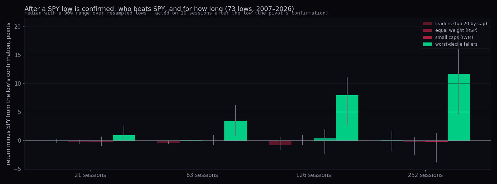
| basket, against SPY from confirmation | 21 sessions | 63 | 126 | 252 | the fall into the low |
|---|---|---|---|---|---|
| leaders (top 20 by cap) | -0.16 -0.45 to 0.20 | -0.42 -0.72 to -0.03 | -0.83 -1.60 to 0.54 | +0.02 -1.80 to 1.72 | +0.18 0.05 to 0.53 |
| equal weight (RSP) | -0.22 -0.59 to 0.07 | +0.13 -0.35 to 0.48 | -0.06 -0.78 to 0.96 | -0.20 -2.60 to 0.58 | -0.32 -0.61 to -0.14 |
| small caps (IWM) | -0.17 -0.95 to 0.66 | -0.01 -0.80 to 0.90 | +0.38 -2.38 to 2.01 | -0.29 -3.88 to 1.34 | -1.40 -1.62 to -0.96 |
| worst-decile fallers into the low | +0.93 0.14 to 2.51 | +3.43 0.71 to 6.24 | +7.95 2.71 to 11.14 | +11.67 4.56 to 20.32 | -13.23 -14.74 to -11.66 |
| by depth of the low | lows | leaders vs SPY, 63 | leaders, 252 | equal weight, 63 | worst fallers, 63 |
|---|---|---|---|---|---|
| 3–5% | 19 | -0.03 -0.52 to 0.61 | -1.02 -3.43 to 1.91 | -0.54 -0.99 to 0.28 | -0.59 -3.20 to 2.66 |
| 5–10% | 35 | -0.40 -1.40 to 0.40 | +1.40 -1.80 to 2.82 | +0.13 -0.21 to 0.78 | +3.61 -0.20 to 8.56 |
| 10–100% | 19 | -0.72 -2.37 to -0.47 | +0.02 -2.03 to 1.72 | +0.44 -0.63 to 1.06 | +8.90 4.38 to 19.47 |
| SPY above its 200-day | 32 | -0.04 -0.52 to 0.61 | -0.33 -0.81 to 0.78 | ||
| SPY below its 200-day | 41 | -0.67 -1.53 to -0.09 | +0.18 -0.15 to 0.63 | ||
| 2016 → | 36 | -0.01 -0.47 to 0.71 | +1.83 0.44 to 4.12 | ||
| 2007–2015 | 37 | -0.88 -1.53 to -0.42 | -3.43 -4.76 to -0.98 |
Why. Three candidates, two ruled out. Not beta: the leaders fell 0.96 times SPY's fall into the low (range 0.92 to 0.99), so they had no more ground to make up. Not breadth as such: equal weight and small caps did not beat SPY after the lows (+0.13 and -0.01 at 63 sessions). What beat SPY was the tenth of names that had fallen most into the low: +3.43 points at 63 sessions, +7.95 at 126, +11.67 at 252. The leaders, being cap leaders, are almost never in that tenth, so a cap-weighted index that carries the rebound of its beaten members edges ahead of a basket of its largest members for a quarter, and the gap closes by the year. The bounce-over-fall ratio says the same: leaders recovered 68.1% of their fall in 63 sessions, SPY 63.1%. The laggards' number is inflated: the served names are those that survived their own worst falls, so the true rebound of the worst decile is smaller than this (the point-in-time universe, F1, is the fix).
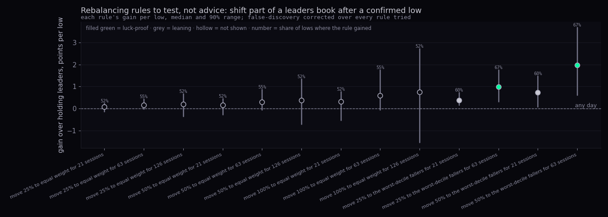
| rule, from an all-leaders book at the low's confirmation | gain over holding, median per low · 90% range | share of lows where it gained | status (13 rules) | first half · second half (median) | lows |
|---|---|---|---|---|---|
| move 25% to equal weight for 21 sessions | +0.08 -0.13 to 0.23 | 52.1% | not shown | +0.16 · -0.08 | 73 |
| move 25% to equal weight for 63 sessions | +0.15 -0.02 to 0.44 | 54.8% | not shown | +0.54 · -0.03 | 73 |
| move 25% to equal weight for 126 sessions | +0.19 -0.36 to 0.68 | 52.1% | not shown | +0.96 · -0.34 | 72 |
| move 50% to equal weight for 21 sessions | +0.16 -0.27 to 0.46 | 52.1% | not shown | +0.32 · -0.16 | 73 |
| move 50% to equal weight for 63 sessions | +0.30 -0.05 to 0.88 | 54.8% | not shown | +1.08 · -0.06 | 73 |
| move 50% to equal weight for 126 sessions | +0.38 -0.71 to 1.35 | 52.1% | not shown | +1.93 · -0.68 | 72 |
| move 100% to equal weight for 21 sessions | +0.32 -0.54 to 0.78 | 52.1% | not shown | +0.63 · -0.32 | 73 |
| move 100% to equal weight for 63 sessions | +0.59 -0.05 to 1.75 | 54.8% | not shown | +2.17 · -0.12 | 73 |
| move 100% to equal weight for 126 sessions | +0.76 -1.54 to 2.73 | 52.1% | not shown | +3.86 · -1.37 | 72 |
| move 25% to the worst-decile fallers for 21 sessions | +0.37 0.16 to 0.74 | 60.3% | leaning | +0.36 · +0.62 | 73 |
| move 25% to the worst-decile fallers for 63 sessions | +0.98 0.31 to 1.75 | 67.1% | luck-proof | +0.92 · +1.46 | 73 |
| move 50% to the worst-decile fallers for 21 sessions | +0.73 0.09 to 1.48 | 60.3% | leaning | +0.71 · +1.23 | 73 |
| move 50% to the worst-decile fallers for 63 sessions | +1.97 0.62 to 3.69 | 67.1% | luck-proof | +1.84 · +2.91 | 73 |
How to read it. Moving into equal weight after a low is a wash at every size and length: the gain is a few tenths of a point with a range across zero and a coin-flip win rate. The rules that clear the check all move into the worst-decile fallers, and the gain grows with the holding period. Before that becomes a rule on the Hub it needs three things: a point-in-time universe (the survivorship problem above), a cost line (the fallers are the illiquid names), and a stop for the fallers that keep falling (section 3 says which ones: the wide usual day, the deep fall from the high). The honest wording today: after a confirmed low, a leaders book that adds a small sleeve of the beaten names for a quarter has beaten one that does not, on a survivor's record.
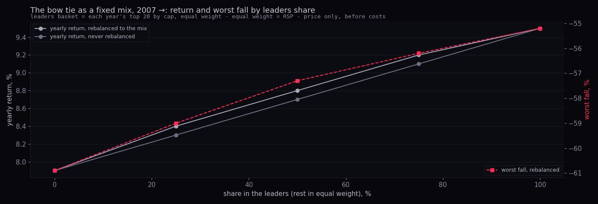
| leaders share (rest equal weight) | yearly return, rebalanced to the mix | worst fall, rebalanced | yearly return, never rebalanced | worst fall, never |
|---|---|---|---|---|
| 100% | 9.5% | -55.2% | 9.5% | -55.2% |
| 75% | 9.2% | -56.2% | 9.1% | -56.2% |
| 50% | 8.8% | -57.3% | 8.7% | -57.3% |
| 25% | 8.4% | -59.0% | 8.3% | -59.0% |
| 0% | 7.9% | -60.9% | 7.9% | -60.9% |
Over 2007 → the leaders wing carried the return (9.5% a year against 7.9% for equal weight) and the shallower worst fall; rebalancing against never rebalancing made no difference at any mix, because the two wings ran close enough that the drift stayed small. So which wing moves after a low is the laggards' sleeve, sized small, for about a quarter; the bow tie's fixed weights are a separate, slower decision that this record does not settle (the statistician-2 pairs study found equal weight's catch-ups took a year, and only after 2008–09).
What we measured. The two tables the L1 lane filled on 28 Sep, read through the Hub's public key: public.sigma_day_counts (5,776 sessions, 2003-10-10 → 2026-09-25; the universe grew from 226 names measured to 486, so every comparison is on the share of names, never the count) and public.sigma_events_daily (126,589 name-days that fired, 478 names). The down-share and up-share of names beyond their usual day, each as its own expanding percentile; the one-sided days at every threshold; a five-day cluster; and, per name, what the name did against SPY after its own sigma day, split by direction, size in usual days, trend state and leader status. The table ends at the 25 Sep close, so the 28 Sep reading (0 up / 20 down on the live strip) is compared with its nearest stored day, 23 Sep (0 up / 25 down, a down share of 5.1%, its 88th percentile).
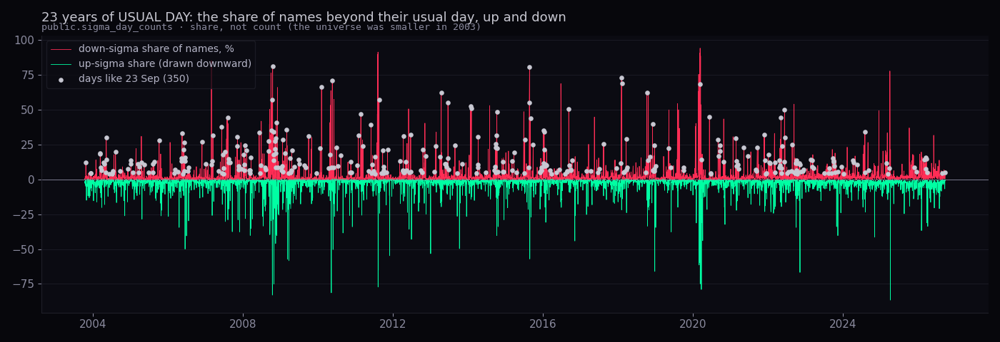
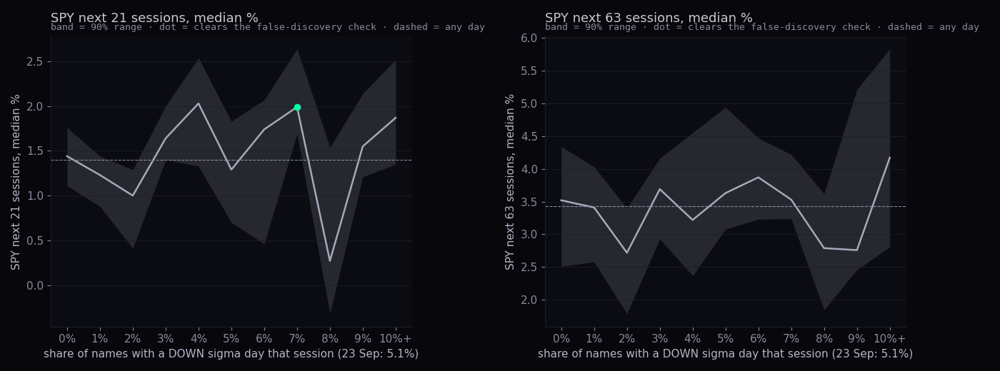
| share of names with a down-sigma day | days · visits | own percentile | SPY next 5 | next 21 · 90% range · status | next 63 · status | worst fall in 21 |
|---|---|---|---|---|---|---|
| 0% | 2945 · 1193 | 26th | +0.35 | +1.44 1.11 to 1.76 not shown | +3.52 not shown | -1.4 |
| 1% | 1113 · 879 | 61st | +0.37 | +1.23 0.88 to 1.44 not shown | +3.41 not shown | -1.5 |
| 2% | 542 · 470 | 75th | +0.27 | +1.00 0.41 to 1.29 leaning | +2.72 leaning | -2.0 |
| 3% | 281 · 264 | 82nd | +0.33 | +1.64 1.40 to 2.00 leaning | +3.69 not shown | -1.9 |
| 4% | 159 · 151 | 86th | +0.63 | +2.03 1.33 to 2.54 not shown | +3.22 not shown | -1.6 |
| 5% | 107 · 101 | 88th | +0.60 | +1.29 0.70 to 1.83 not shown | +3.63 not shown | -2.0 |
| 6% | 97 · 94 | 90th | +0.51 | +1.74 0.46 to 2.07 not shown | +3.87 not shown | -1.8 |
| 7% | 57 · 56 | 91st | +0.95 | +1.99 1.69 to 2.64 luck-proof | +3.53 not shown | -1.2 |
| 8% | 52 · 52 | 92nd | +0.13 | +0.27 -0.32 to 1.54 not shown | +2.79 not shown | -2.7 |
| 9% | 40 · 39 | 93rd | +0.58 | +1.55 1.21 to 2.14 not shown | +2.76 not shown | -1.5 |
| 10%+ | 383 · 332 | 97th | +0.56 | +1.87 1.35 to 2.52 not shown | +4.17 not shown | -2.2 |
| any day | 5776 | +0.36 | +1.40 | +3.43 | -1.6 |
The share takes few distinct values (it is a count over about 500 names), so the ladder is in its own units, every whole percent, rather than percentile rungs. 23 Sep's 5.1% sits in the 5% row, its 88th percentile.
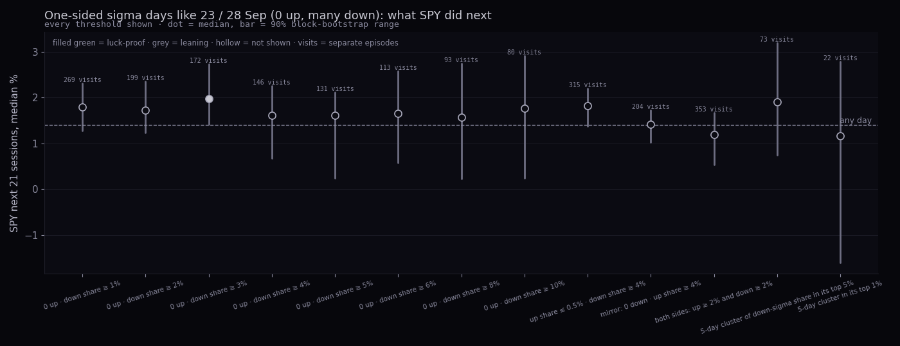
| definition | days · visits · years | SPY next 5 | next 21 · 90% range · status | next 63 · status | worst fall in 21 | more top-decile down days in the next 10 sessions |
|---|---|---|---|---|---|---|
| 0 up · down share ≥ 1% | 288 · 269 · 24 | +0.47 (58.7% up) | +1.79 1.28 to 2.31 not shown | +3.41 not shown | -1.8 (any day -1.6) | 12.3% (any day 10.5%) |
| 0 up · down share ≥ 2% | 209 · 199 · 23 | +0.47 (57.4% up) | +1.72 1.23 to 2.35 not shown | +3.41 not shown | -2.1 (any day -1.6) | 13.4% (any day 10.5%) |
| 0 up · down share ≥ 3% | 179 · 172 · 23 | +0.57 (58.7% up) | +1.97 1.41 to 2.73 leaning | +3.77 not shown | -2.1 (any day -1.6) | 13.1% (any day 10.5%) |
| 0 up · down share ≥ 4% | 151 · 146 · 23 | +0.47 (57.6% up) | +1.61 0.67 to 2.26 not shown | +3.57 not shown | -2.1 (any day -1.6) | 13.8% (any day 10.5%) |
| 0 up · down share ≥ 5% | 135 · 131 · 20 | +0.36 (55.6% up) | +1.61 0.24 to 2.11 not shown | +3.73 not shown | -2.1 (any day -1.6) | 14.3% (any day 10.5%) |
| 0 up · down share ≥ 6% | 117 · 113 · 19 | +0.26 (54.7% up) | +1.66 0.58 to 2.58 not shown | +3.78 not shown | -2.1 (any day -1.6) | 15.1% (any day 10.5%) |
| 0 up · down share ≥ 8% | 97 · 93 · 17 | +0.24 (53.6% up) | +1.57 0.23 to 2.75 not shown | +3.78 not shown | -2.3 (any day -1.6) | 16.7% (any day 10.5%) |
| 0 up · down share ≥ 10% | 82 · 80 · 16 | +0.29 (54.9% up) | +1.76 0.24 to 2.91 not shown | +3.82 not shown | -2.3 (any day -1.6) | 17.7% (any day 10.5%) |
| today's class: up share ≤ 0.5% · down share ≥ 4% | 350 · 315 · 24 | +0.49 (59.1% up) | +1.82 1.37 to 2.20 not shown | +3.97 not shown | -2.1 (any day -1.6) | 13.7% (any day 10.5%) |
| mirror: 0 down · up share ≥ 4% | 211 · 204 · 23 | +0.21 (56.4% up) | +1.42 1.02 to 1.72 not shown | +3.02 not shown | -1.6 (any day -1.6) | 9.6% (any day 10.5%) |
| both sides: up ≥ 2% and down ≥ 2% | 454 · 353 · 24 | +0.29 (56.6% up) | +1.20 0.54 to 1.67 not shown | +3.12 not shown | -2.0 (any day -1.6) | 16.2% (any day 10.5%) |
| 5-day cluster of down-sigma share in its top 5% | 324 · 73 · 20 | +0.62 (59.6% up) | +1.91 0.74 to 3.19 not shown | +3.48 not shown | -2.5 (any day -1.6) | 22.2% (any day 10.5%) |
| 5-day cluster in its top 1% | 88 · 22 · 12 | +0.42 (56.8% up) | +1.16 -1.60 to 2.78 not shown | +4.73 not shown | -4.4 (any day -1.6) | 31.4% (any day 10.5%) |
How to read it. A day when no name has an up-sigma and many have a down-sigma is a broad, orderly sell day. Its next month and quarter sit a little above any day's at every threshold, which is the ordinary rebound after a down day, and none of it clears the check: read the status word before the number. The steadier fact is the clustering: after such a day, 13.7% of the next ten sessions were themselves top-decile down-sigma days, against 10.5% on any day. The mirror image (0 down, many up) is the bounce day, and the two-sided day (both wings beyond 2%) is the dispersion day. The 350 days like 23 Sep sat a median -5.7% under SPY's high with the VIX at its 65th percentile and SPY above its 200-day 56.7% of the time; the last ones were 2026-03-18, 2026-03-20, 2026-03-26, 2026-03-30, 2026-08-28, 2026-09-23.
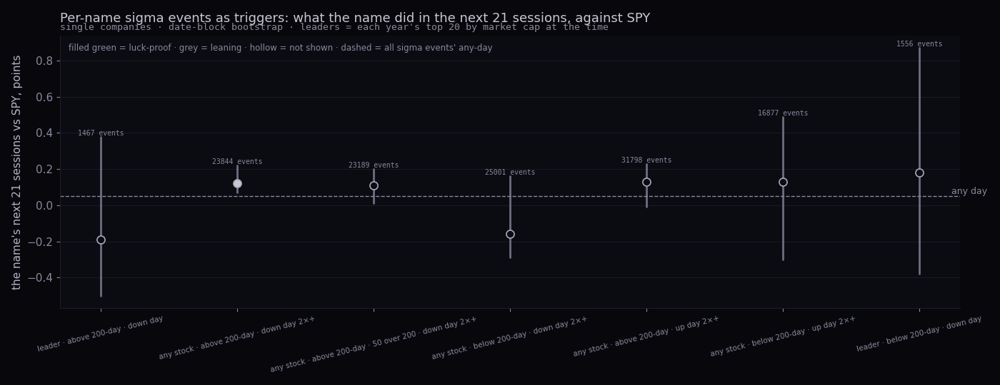
| trigger (single companies) | events · dates · names | next 5 vs SPY | next 21 vs SPY · 90% range · status | next 63 vs SPY · status | 21, first half · second half |
|---|---|---|---|---|---|
| leader · above 200-day · down day | 1,467 · 792 · 39 | +0.04 | -0.19 -0.50 to 0.38 not shown | -0.35 not shown | -0.50 · +0.13 |
| any stock · above 200-day · down day 2×+ | 23,844 · 3,507 · 403 | -0.01 | +0.12 0.07 to 0.22 leaning | +0.10 not shown | +0.13 · +0.09 |
| any stock · above 200-day · 50 over 200 · down day 2×+ | 23,189 · 3,437 · 400 | -0.02 | +0.11 0.01 to 0.20 not shown | +0.15 not shown | +0.17 · +0.10 |
| any stock · below 200-day · down day 2×+ | 25,001 · 3,693 · 405 | -0.11 | -0.16 -0.29 to 0.16 not shown | +0.74 not shown | +0.12 · -0.22 |
| any stock · above 200-day · up day 2×+ | 31,798 · 4,478 · 405 | -0.00 | +0.13 -0.01 to 0.23 not shown | +0.21 not shown | +0.19 · -0.03 |
| any stock · below 200-day · up day 2×+ | 16,877 · 3,329 · 405 | -0.04 | +0.13 -0.30 to 0.49 not shown | +0.63 not shown | +0.13 · +0.22 |
| leader · below 200-day · down day | 1,556 · 765 · 41 | -0.02 | +0.18 -0.38 to 0.87 not shown | -0.33 not shown | -0.28 · +0.38 |
| any sigma event | 108,066 | -0.04 | +0.05 | +0.34 |
| direction · size · state | events · dates | next 5 vs SPY | next 21 vs SPY · 90% range · status | next 63 vs SPY · status |
|---|---|---|---|---|
| down day · raw only (<2× usual) · above 200-day | 1,635 · 617 | -0.47 | -3.96 -6.25 to -1.74 leaning | -5.41 not shown |
| down day · raw only (<2× usual) · below 200-day | 3,243 · 959 | +1.59 | +1.34 -1.10 to 4.12 not shown | +8.69 not shown |
| down day · 2–3× usual · above 200-day | 18,013 · 3,161 | +0.04 | +0.22 0.12 to 0.34 leaning | +0.17 not shown |
| down day · 2–3× usual · below 200-day | 17,135 · 3,132 | -0.01 | -0.03 -0.21 to 0.11 not shown | +0.89 not shown |
| down day · 3–4× usual · above 200-day | 3,973 · 1,353 | -0.07 | +0.04 -0.15 to 0.23 not shown | -0.21 luck-proof |
| down day · 3–4× usual · below 200-day | 4,467 · 1,461 | -0.36 | -0.21 -0.42 to -0.07 leaning | +0.55 not shown |
| down day · 4×+ usual · above 200-day | 1,858 · 872 | -0.05 | +0.05 -0.49 to 0.25 not shown | -0.12 not shown |
| down day · 4×+ usual · below 200-day | 3,399 · 1,353 | -0.56 | -0.12 -0.47 to 0.55 not shown | +0.85 not shown |
| up day · raw only (<2× usual) · above 200-day | 2,409 · 931 | -0.46 | -1.63 -4.91 to 3.21 not shown | -2.89 not shown |
| up day · raw only (<2× usual) · below 200-day | 3,259 · 1,078 | -0.50 | -0.03 -2.31 to 1.96 not shown | +4.21 not shown |
| up day · 2–3× usual · above 200-day | 23,615 · 4,064 | -0.01 | +0.12 -0.01 to 0.23 not shown | +0.22 not shown |
| up day · 2–3× usual · below 200-day | 12,654 · 2,929 | -0.02 | +0.13 -0.13 to 0.50 not shown | +0.65 not shown |
| up day · 3–4× usual · above 200-day | 4,841 · 2,170 | +0.08 | +0.06 -0.27 to 0.36 not shown | +0.15 not shown |
| up day · 3–4× usual · below 200-day | 2,830 · 1,129 | -0.04 | -0.06 -0.67 to 0.94 not shown | -0.39 not shown |
| up day · 4×+ usual · above 200-day | 3,342 · 1,760 | +0.11 | +0.30 -0.01 to 0.60 not shown | +1.00 leaning |
| up day · 4×+ usual · below 200-day | 1,393 · 661 | +0.08 | +1.54 -1.32 to 2.35 not shown | +1.64 leaning |
| direction · state · leader | events · dates | next 21 vs SPY · status | next 63 vs SPY · status |
|---|---|---|---|
| down day · above 200-day · False | 24,012 · 3,561 | +0.08 -0.06 to 0.27 not shown | +0.01 not shown |
| down day · above 200-day · True | 1,467 · 792 | -0.19 -0.51 to 0.27 not shown | -0.35 not shown |
| down day · below 200-day · False | 26,688 · 3,812 | -0.07 -0.26 to 0.23 not shown | +1.07 leaning |
| down day · below 200-day · True | 1,556 · 765 | +0.18 -0.38 to 0.86 not shown | -0.33 not shown |
| up day · above 200-day · False | 32,322 · 4,518 | +0.10 -0.03 to 0.21 not shown | +0.20 not shown |
| up day · above 200-day · True | 1,885 · 1,126 | -0.12 -0.47 to 0.24 not shown | -0.16 not shown |
| up day · below 200-day · False | 19,125 · 3,558 | +0.17 -0.32 to 0.49 not shown | +1.09 not shown |
| up day · below 200-day · True | 1,011 · 509 | -0.74 -1.15 to -0.08 not shown | -0.67 not shown |
| direction · type | events · dates | next 21 vs SPY · status | next 63 vs SPY · status |
|---|---|---|---|
| down day · bond fund | 404 · 253 | -0.89 -1.67 to -0.00 not shown | -2.83 leaning |
| down day · commodity fund | 1,882 · 800 | +0.24 -0.69 to 1.49 not shown | -0.24 not shown |
| down day · index fund | 3,046 · 732 | +0.00 -0.21 to 0.20 not shown | +0.16 not shown |
| down day · large cap (10–200bn) | 31,079 · 4,363 | +0.17 -0.14 to 0.40 not shown | +0.77 not shown |
| down day · mega cap (>200bn) | 8,986 · 2,613 | +0.47 0.14 to 0.93 luck-proof | +1.46 luck-proof |
| down day · mid cap (2–10bn) | 3,232 · 1,428 | -2.06 -2.90 to 0.24 not shown | -3.01 not shown |
| down day · sector/other fund | 4,770 · 1,180 | +0.10 -0.18 to 0.37 not shown | +0.56 not shown |
| down day · small cap (<2bn) | 974 · 561 | -6.95 -9.36 to -5.21 luck-proof | -9.14 luck-proof |
| down day · stock (no cap) | 9,452 · 1,244 | -0.06 -0.19 to 0.07 not shown | -0.11 luck-proof |
| up day · bond fund | 268 · 184 | -1.91 -2.93 to -0.54 luck-proof | -3.29 luck-proof |
| up day · commodity fund | 1,910 · 885 | +0.88 -0.32 to 1.54 not shown | -1.63 not shown |
| up day · index fund | 2,451 · 750 | -0.05 -0.38 to 0.13 not shown | +0.00 not shown |
| up day · large cap (10–200bn) | 31,916 · 4,775 | +0.36 0.15 to 0.46 luck-proof | +0.66 not shown |
| up day · mega cap (>200bn) | 9,561 · 3,092 | +0.35 0.20 to 0.64 luck-proof | +1.17 luck-proof |
| up day · mid cap (2–10bn) | 4,460 · 1,919 | -1.67 -4.21 to 0.31 not shown | -2.49 not shown |
| up day · sector/other fund | 3,792 · 1,351 | +0.03 -0.23 to 0.14 not shown | +0.37 not shown |
| up day · small cap (<2bn) | 1,279 · 730 | -6.59 -7.60 to -3.87 luck-proof | -12.89 luck-proof |
| up day · stock (no cap) | 7,127 · 1,218 | -0.17 -0.31 to -0.06 leaning | -0.16 luck-proof |
How to read it. The pooled medians sit within a quarter of a point of any day in every row, in both halves, and the one cell that clears the check (3–4× usual down days above the 200-day, over 63 sessions) is a fraction of a point the wrong way. The "raw only" rows are the names whose usual day is so wide that a big move is still under 2× it; they lag afterwards, which is the section-3 finding again (the wide usual day marks the names that keep falling). The leaders' sigma days are no different from anyone else's.
The scan proposal. USUAL DAY already shows the day's sigma names, and this record says the list is worth reading for attention, not for direction: a sigma day in a name is where the news is, not a signal about the next month. So: keep the list, print beside each name its trend state (above or below its 200-day, 50 over 200 or not) and its own usual day, because those are the two things sections 3 and 5 found to matter, and do not print a forward number, because there is none to print. The one line the day strip itself has earned is the clustering: "days like this were followed by another top-decile down day in 13.7% of the next ten sessions (any day 10.5%)". The leaders' rows (5,919 events) are in the table above for completeness; they carry nothing.
What we measured. Gold futures (continuous, FMP, 1975 →, 13,166 sessions) and the ICE dollar index (1971 →, 14,284 sessions). Extension = the distance from the 200-day average, read as an expanding own-history percentile. No cut-off chooses the runs: every rung of the ladder is reported; the "parabolic" list is the top 5% of the ladder, merged into separate runs when closer than 63 sessions, and each run is shown one by one with its peak, the fall after it, the sessions to the trough and the wait for a new high (Kaplan–Meier where still open). Outcomes per rung: the next 63, 126 and 252 sessions and the worst fall inside a year, with block-bootstrap ranges and a false-discovery check over the 80 cells. Then gold's next year by the dollar's extension decile.
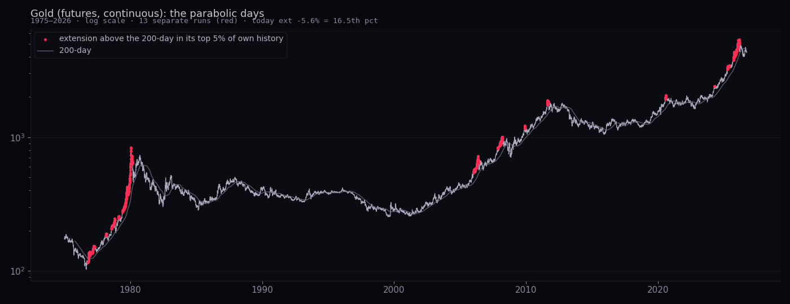
| run (top-5% extension days) | peak | at the peak: above 200-day · 1-year gain · RSI | fall after the peak | sessions to the trough | wait for a new high | next 63 · 252 · 504 from the peak |
|---|---|---|---|---|---|---|
| 1976-10-18 → 1977-04-18 (125 days) | 1977-03-23 · 154 | 22% · 15% · 72 | -10.3% | 57 | 125 sessions (0.5 y) | -8.5 · +18.7 · +57.9 |
| 1978-02-21 → 1978-03-13 (15 days) | 1978-03-08 · 191 | 20% · 29% · 73 | -11.7% | 32 | 93 sessions (0.4 y) | -4.2 · +25.9 · +217.3 |
| 1978-07-28 → 1978-10-31 (67 days) | 1978-10-30 · 247 | 28% · 53% · 77 | -22.0% | 19 | 66 sessions (0.3 y) | -4.2 · +55.3 · +161.1 |
| 1979-02-05 → 1979-02-23 (14 days) | 1979-02-07 · 257 | 24% · 45% · 73 | -9.3% | 46 | 68 sessions (0.3 y) | -1.8 · +176.3 · +105.3 |
| 1979-05-30 → 1980-03-05 (194 days) | 1980-01-21 · 834 | 132% · 259% · 92 | -69.6% | 4910 | 6992 sessions (27.7 y) | -40.4 · -31.9 · -55.1 |
| 2006-01-06 → 2006-06-05 (103 days) | 2006-05-11 · 722 | 38% · 69% · 83 | -21.5% | 23 | 343 sessions (1.4 y) | -10.7 · -7.6 · +21.6 |
| 2007-11-06 → 2008-03-19 (93 days) | 2008-03-18 · 1004 | 28% · 51% · 71 | -29.8% | 170 | 382 sessions (1.5 y) | -11.7 · -8.0 · +12.8 |
| 2009-11-23 → 2009-12-03 (9 days) | 2009-12-03 · 1218 | 25% · 47% · 84 | -13.6% | 44 | 110 sessions (0.4 y) | -7.0 · +11.8 · +45.6 |
| 2011-08-10 → 2011-09-14 (26 days) | 2011-08-22 · 1892 | 28% · 51% · 85 | -44.5% | 1116 | 2302 sessions (9.1 y) | -9.1 · -14.8 · -31.2 |
| 2020-07-27 → 2020-08-18 (17 days) | 2020-08-06 · 2069 | 26% · 35% · 91 | -21.2% | 580 | 858 sessions (3.4 y) | -7.7 · -11.3 · -17.8 |
| 2024-04-16 → 2024-04-19 (4 days) | 2024-04-19 · 2414 | 19% · 21% · 79 | -4.6% | 7 | 20 sessions (0.1 y) | +1.9 · +23.9 · +112.7 |
| 2025-04-11 → 2025-06-13 (45 days) | 2025-06-13 · 3453 | 19% · 48% · 63 | -4.8% | 10 | 39 sessions (0.2 y) | +6.6 · +32.1 · — |
| 2025-09-22 → 2026-03-15 (144 days) | 2026-03-01 · 5366 | 31% · 72% · 66 | -25.6% | 117 | still waiting (117+ sessions) | -12.7 · — · — |
How to read it. Thirteen runs in 52 years, a list, not a rate. Two of them were the famous ones: January 1980 (132% above the 200-day, RSI 92), followed by a 70% fall and a 28-year wait; August 2011, a 44% fall and 9 years. The rest fell 5 to 30% and recovered within a year and a half. The 2025–26 run was the third-widest extension on the list (31% above the 200-day, a 72% year), and its fall so far (25.6%) already matches the middle of the list; whether the wait is 2006's (343 sessions) or 2011's is exactly what a list of thirteen cannot say.
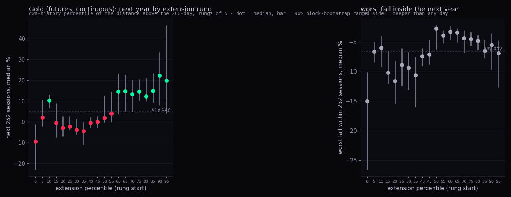
| extension rung (own pct) | days | extension (median) | next 63 | next 126 | next 252 · 90% range · FDR | worst fall in 252 · FDR | wait for a new high (median sessions) |
|---|---|---|---|---|---|---|---|
| 0–5 | 263 | -17.6% | -0.1 | -6.3 | -9.4 -22.7 to -1.4 ✓ | -15.0 ✓ | 1 |
| 5–10 | 287 | -10.7% | +5.6 | +4.1 | +2.1 -1.9 to 10.3 | -6.6 | 2 |
| 10–15 | 406 | -8.1% | +3.0 | +6.5 | +10.3 6.9 to 12.8 | -6.0 | 2 |
| 15–20 | 477 | -6.5% | +0.2 | +0.5 | -0.5 -7.2 to 8.8 | -10.2 | 2 |
| 20–25 | 537 | -5.6% | -1.7 | -2.8 | -2.8 -6.8 to 2.5 ✓ | -11.6 ✓ | 2 |
| 25–30 | 567 | -4.8% | -0.8 | -0.9 | -2.2 -3.7 to 2.4 ✓ | -8.9 | 2 |
| 30–35 | 642 | -3.9% | -0.9 | -1.8 | -3.9 -6.0 to 1.4 ✓ | -9.4 ✓ | 2 |
| 35–40 | 859 | -2.5% | -1.7 | -3.2 | -4.4 -10.9 to -0.1 ✓ | -10.6 ✓ | 1 |
| 40–45 | 739 | -1.5% | -1.0 | -0.4 | -0.5 -2.8 to 2.1 ✓ | -7.4 | 2 |
| 45–50 | 832 | -0.2% | -0.4 | -0.5 | +0.0 -2.7 to 2.5 ✓ | -7.1 | 2 |
| 50–55 | 850 | 1.3% | +1.7 | +2.8 | +1.9 -0.0 to 12.5 | -2.7 | 1 |
| 55–60 | 795 | 2.6% | +1.0 | +3.0 | +4.0 0.2 to 14.3 | -3.9 ✓ | 1 |
| 60–65 | 764 | 3.7% | +3.1 | +5.5 | +14.6 4.0 to 22.9 | -3.3 ✓ | 2 |
| 65–70 | 703 | 5.2% | +2.9 | +5.5 | +14.7 5.3 to 22.5 | -3.4 ✓ | 1 |
| 70–75 | 655 | 6.5% | +1.8 | +5.9 | +13.3 4.9 to 20.2 | -4.4 | 1 |
| 75–80 | 662 | 8.0% | +4.3 | +7.9 | +14.5 10.1 to 20.3 ✓ | -4.5 ✓ | 1 |
| 80–85 | 724 | 9.7% | +3.3 | +7.5 | +12.2 9.9 to 21.0 ✓ | -4.8 ✓ | 1 |
| 85–90 | 703 | 12.2% | +1.8 | +6.8 | +14.9 9.3 to 23.2 ✓ | -6.5 | 1 |
| 90–95 | 599 | 15.9% | +1.8 | +9.5 | +22.3 8.1 to 33.5 ✓ | -5.5 | 1 |
| 95–100 | 653 | 22.3% | +2.0 | +7.6 | +19.8 4.2 to 46.3 | -6.9 | 1 |
| any day | 13166 | +0.7 | +2.2 | +4.8 | -6.6 | 1 |
How to read it. Gold trends. The rungs above the 60th percentile of extension were followed by years of +12 to +22% (any day +4.8%), most of them clearing the false-discovery check, and the worst fall inside those years was shallower than any day's. The bad rungs are at the bottom: deep under the 200-day (the 0–5 rung, -18% under) the next year was -9.4% with a -15.0% worst fall, and the 20–50 rungs, where gold is today (16th), were flat to negative. In words: the parabola is the danger only at its peak day, and the peak is known afterwards; on the ladder, extension was persistence, and the place to be careful is where gold is now, the months after the break.
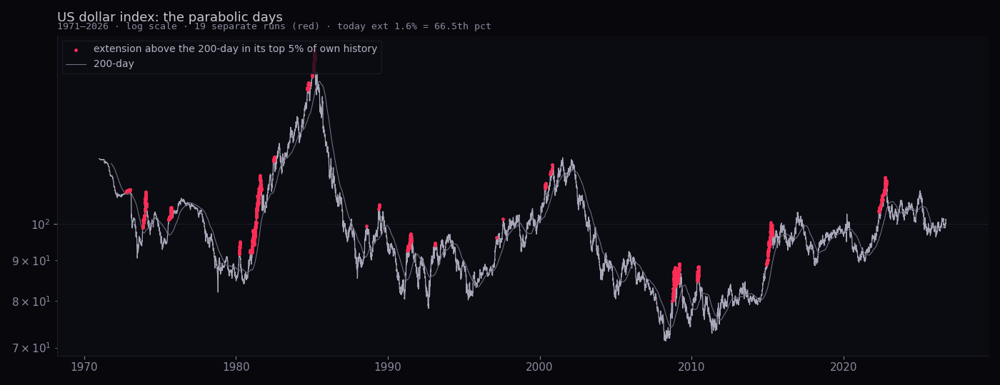
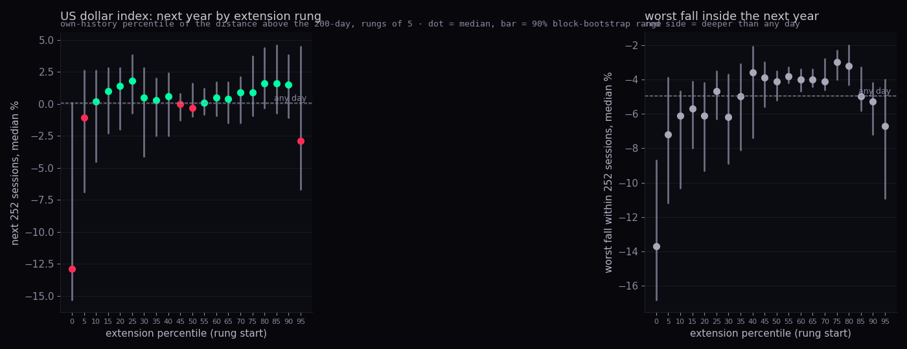
| dollar extension rung | days | extension (median) | next 63 | next 252 · 90% range · FDR | worst fall in 252 · FDR |
|---|---|---|---|---|---|
| 0–5 | 384 | -9.4% | -2.3 | -12.9 -15.3 to 0.1 | -13.7 ✓ |
| 5–10 | 590 | -7.2% | +0.3 | -1.1 -6.9 to 2.6 | -7.2 |
| 10–15 | 579 | -6.0% | -0.3 | +0.2 -4.5 to 2.6 | -6.1 |
| 15–20 | 555 | -5.1% | -1.0 | +1.0 -2.3 to 2.8 | -5.7 |
| 20–25 | 730 | -4.3% | -1.4 | +1.4 -2.0 to 2.8 | -6.1 |
| 25–30 | 653 | -3.5% | -0.4 | +1.8 -0.7 to 3.8 | -4.7 |
| 30–35 | 671 | -2.7% | -0.7 | +0.5 -4.1 to 2.8 | -6.2 |
| 35–40 | 710 | -1.9% | -0.3 | +0.3 -2.5 to 2.0 | -5.0 |
| 40–45 | 825 | -1.2% | +0.1 | +0.6 -2.5 to 2.4 | -3.6 |
| 45–50 | 706 | -0.6% | +0.5 | -0.0 -1.3 to 0.8 | -3.9 |
| 50–55 | 687 | -0.0% | +0.5 | -0.3 -1.0 to 1.6 | -4.1 |
| 55–60 | 790 | 0.5% | +0.5 | +0.1 -0.8 to 1.2 | -3.8 |
| 60–65 | 719 | 1.2% | +0.4 | +0.5 -0.9 to 1.7 | -4.0 |
| 65–70 | 847 | 1.8% | +1.1 | +0.4 -1.5 to 1.7 | -4.0 |
| 70–75 | 854 | 2.5% | +0.6 | +0.9 -1.5 to 2.1 | -4.1 |
| 75–80 | 752 | 3.4% | +0.5 | +0.9 -0.9 to 3.7 | -3.0 ✓ |
| 80–85 | 677 | 4.2% | +0.5 | +1.6 -0.3 to 4.4 | -3.2 |
| 85–90 | 670 | 5.4% | +0.0 | +1.6 -0.7 to 4.6 | -5.0 |
| 90–95 | 701 | 7.1% | -0.1 | +1.5 -1.1 to 3.8 | -5.3 |
| 95–100 | 735 | 9.4% | -0.8 | -2.9 -6.7 to 4.5 | -6.7 |
| any day | 14284 | -0.0 | +0.1 | -5.0 |
| run | peak | above 200-day · 1-year · RSI | fall after | sessions to trough | wait for a new high | next 63 · 252 |
|---|---|---|---|---|---|---|
| 1972-10-20 → 1973-01-19 | 1973-01-19 · 110.3 | 1.1% · -0.1% · 64 | -25.6% | 1444 | 2116 sessions | -8.2 · -1.6 |
| 1973-11-12 → 1974-02-13 | 1974-01-23 · 109.5 | 11.8% · -0.7% · 78 | -25.1% | 1193 | 1863 sessions | -9.8 · -13.3 |
| 1975-07-30 → 1975-10-09 | 1975-09-23 · 104.8 | 8.0% · 2.1% · 90 | -3.1% | 28 | 113 sessions | -1.4 · +0.8 |
| 1980-03-24 → 1980-04-08 | 1980-04-07 · 94.9 | 8.5% · 6.5% · 89 | -11.3% | 66 | 205 sessions | -11.3 · +3.3 |
| 1980-12-10 → 1981-09-08 | 1981-08-10 · 114.9 | 16.6% · 33.8% · 74 | -10.2% | 75 | 162 sessions | -8.3 · +5.6 |
| 1982-06-21 → 1982-07-08 | 1982-07-08 · 121.1 | 10.0% · 10.5% · 73 | -4.1% | 11 | 22 sessions | +1.7 · +4.2 |
| 1984-09-17 → 1985-03-18 | 1985-02-25 · 164.7 | 14.2% · 25.5% · 84 | -56.7% | 5982 | still waiting | -9.6 · -28.9 |
| 1988-08-09 → 1988-08-09 | 1988-08-09 · 99.3 | 9.2% · 2.1% · 71 | -9.3% | 83 | 198 sessions | -5.6 · -1.1 |
| 1989-05-24 → 1989-06-14 | 1989-06-14 · 105.6 | 9.9% · 10.7% · 70 | -25.8% | 839 | 2792 sessions | -2.0 · -12.0 |
| 1991-04-19 → 1991-07-17 | 1991-07-11 · 97.2 | 11.5% · 9.4% · 64 | -19.4% | 298 | 1512 sessions | -6.4 · -14.0 |
| 1993-02-02 → 1993-02-15 | 1993-02-04 · 94.5 | 9.4% · 6.1% · 67 | -6.4% | 57 | 111 sessions | -5.8 · +2.1 |
| 1997-03-04 → 1997-03-04 | 1997-03-04 · 96.1 | 8.4% · 11.4% · 74 | -0.2% | 2 | 3 sessions | -1.3 · +4.1 |
| 1997-08-06 → 1997-08-06 | 1997-08-06 · 101.4 | 8.4% · 17.0% · 87 | -6.1% | 67 | 109 sessions | -5.2 · -0.7 |
| 2000-05-03 → 2000-05-19 | 2000-05-18 · 112.2 | 9.1% · 9.5% · 68 | -5.6% | 20 | 74 sessions | -1.7 · +4.4 |
| 2000-09-11 → 2000-10-26 | 2000-10-26 · 118.5 | 8.8% · 18.0% · 73 | -8.5% | 49 | 151 sessions | -5.8 · -2.5 |
| 2008-09-11 → 2009-03-13 | 2009-03-05 · 89.1 | 11.3% · 21.3% · 65 | -18.2% | 543 | 1450 sessions | -10.9 · -9.7 |
| 2010-05-06 → 2010-06-22 | 2010-06-07 · 88.4 | 11.8% · 9.6% · 73 | -17.5% | 227 | 1131 sessions | -6.0 · -16.3 |
| 2014-12-03 → 2015-04-27 | 2015-03-13 · 100.3 | 15.7% · 26.0% · 80 | -7.7% | 287 | 424 sessions | -5.3 · -4.1 |
| 2022-04-28 → 2022-11-03 | 2022-09-27 · 114.1 | 11.7% · 21.1% · 80 | -15.7% | 928 | still waiting | -8.7 · -7.7 |
How to read it. The dollar does not carry an extension the way gold does: its top rung (95th+) was followed by a median year of -2.9% (any day +0.1%), and its 19 extensions were followed by falls of 6 to 18% and waits of months to years (2022's is still open after 928 sessions). Deep under its 200-day it kept falling (the bottom rung's next year -12.9%), so the asymmetry is the finding: stretched high reverts, stretched low runs on. Today it is +1.6% from its 200-day, the 66th percentile, with a one-year change of +2.1%: not an extension by this measure. "Extended" on the Station's shorter lenses (RSI 67 today) is a different clock and was not tested here.
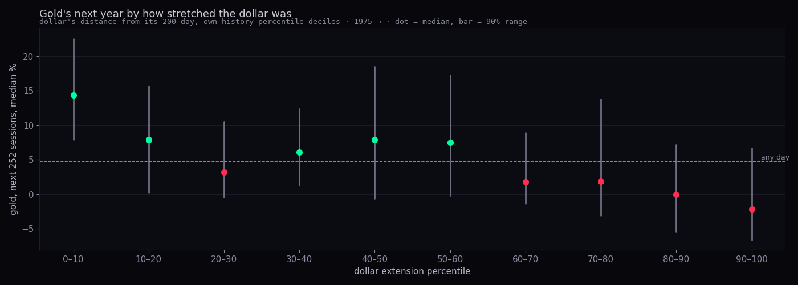
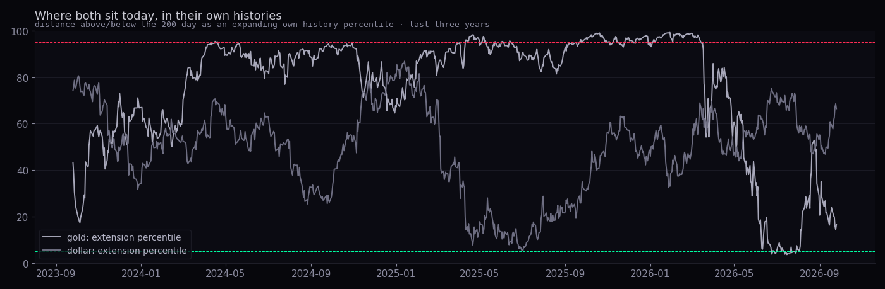
| dollar extension decile | days | dollar's distance from its 200-day (median) | gold's next 252 · 90% range | FDR (10 tests) |
|---|---|---|---|---|
| 0–10 | 854 | -7.7% | +14.4 7.9 to 22.6 | ✓ |
| 10–20 | 1096 | -5.5% | +7.9 0.2 to 15.7 | |
| 20–30 | 1334 | -3.9% | +3.2 -0.4 to 10.5 | |
| 30–40 | 1343 | -2.3% | +6.1 1.3 to 12.4 | |
| 40–50 | 1412 | -1.0% | +7.9 -0.6 to 18.5 | |
| 50–60 | 1332 | 0.2% | +7.5 -0.2 to 17.3 | |
| 60–70 | 1418 | 1.5% | +1.8 -1.3 to 8.9 | |
| 70–80 | 1538 | 2.9% | +1.9 -3.1 to 13.8 | |
| 80–90 | 1293 | 4.7% | +0.0 -5.4 to 7.2 | |
| 90–100 | 1294 | 8.0% | -2.2 -6.6 to 6.7 | |
| any day | 12914 | +4.8 |
Gold's year is best when the dollar is deep under its 200-day (the bottom decile, +14.4%, the one cell that clears the check) and worst when the dollar is stretched high. Today the dollar sits in the 66th percentile, a middle rung where gold's year was +1.8%: no signal either way from the dollar.
arch and statsmodels were reimplemented in 200 lines of numpy so the studies run on this Mac with no install. The next thing to borrow is alphalens-reloaded for F6, and the RRG reimplementation the sector lane already did for the wings.What it shows. Six questions from Alan's 28 Sep afternoon notes, each measured on the full record with base rates and ranges, ten follow-ups, and nothing that changes the Hub.
Where the numbers come from. Daily bars for every served name and the macro series (VIX, put/call, dollar, gold, yields) from the chart API https://scintilla-massive-chart-api.fly.dev/candles?tf=1d at the 25 Sep close, fetched once on 28 Sep into a local cache; VIX3M and the dividend-adjusted HYG/LQD from the regime lane's Fly pull of FMP (cached); the two sigma tables and the company profiles (market cap, fund flag, sector) from Supabase through the Hub's public read key, read only; the year-by-year top-20 leader lists from the statistician-2 data file. The Geiger replay imports the Hub's own per-rung maths (deliverables/20260927/geiger-review/geiger-replay.mjs) through the sector-rotation lane's daily-history function. Code: research/statistics/stats-3/ (lib.py the arithmetic, pooled.py the date-block bootstrap, one file per question, build_page.py this page); numbers in data/q1.json … q6.json; every chart is a PNG in charts/. Tests: tests/stats-3.test.mjs (the Python RSI against the Hub's rsiLast to nine decimals, the percentile, the false-discovery rule against the Node method library, the pivot swings, the page's images and data files, the grey-only palette).
How sure. Every conditional number carries the standard's three: how many (independent episodes: visits, lows, entries, dates in blocks of 63, or years), how sure (a 90% range from resampling those units, never single days), how big (the shift against any day), and a word after the false-discovery check over everything tried in that table. Pooled stock tables resample dates, not name-days, so a crash counts once.
What could be wrong. (1) Survivorship: the stock universe is today's served names; sections 1d, 3, 4 and 5c measure survivors, and the today's-cap tranches are biased in both directions (said in each place). (2) Daily Geiger only: the intraday rungs carry about three-fifths of the Equalizer's weight and are not in the replay. (3) Fault cuts: 77 histories are cut at a price fault (the bottoms lane's rule); META before June 2022 is not spliced here. (4) The fear proxy is a reconstruction, not CNN's number; its parts are the public ones but the weights and windows are this lane's. (5) Put/call starts in November 2006, so every confluence number covers 20 years, not 23. (6) Gold and the dollar are FMP continuous series; the 1970s prints are daily closes with no volume, and the extension percentile in the first years compares against a short history. (7) The laggards basket ignores costs and liquidity. (8) The 28 Sep sigma reading is not in the stored table yet; the page compares it with 23 Sep.
What was not done. Nothing was deployed; no key, database write or price table was touched; the Hub's own pages were not edited; the Geiger was not changed. The point-in-time universe (F1) was not built. The intraday rungs were not replayed. No proposal here is a buy or sell rule.